🎯 簡介
NuModem EG800 是一支單一 HTML 檔的 4G modem 控制台。它透過瀏覽器的 Web Serial API 直接對 Quectel EG800K 系列模組下 AT 指令， 不需要安裝任何東西、不需要驅動程式以外的軟體、也沒有後端伺服器。
它跟一般的序列埠終端機差在哪？差在它看得懂 AT 指令。 每一條你送出的指令、每一行模組回來的回應，旁邊都會即時附上一句人話說明 —— 包括那些只有數字的錯誤碼。
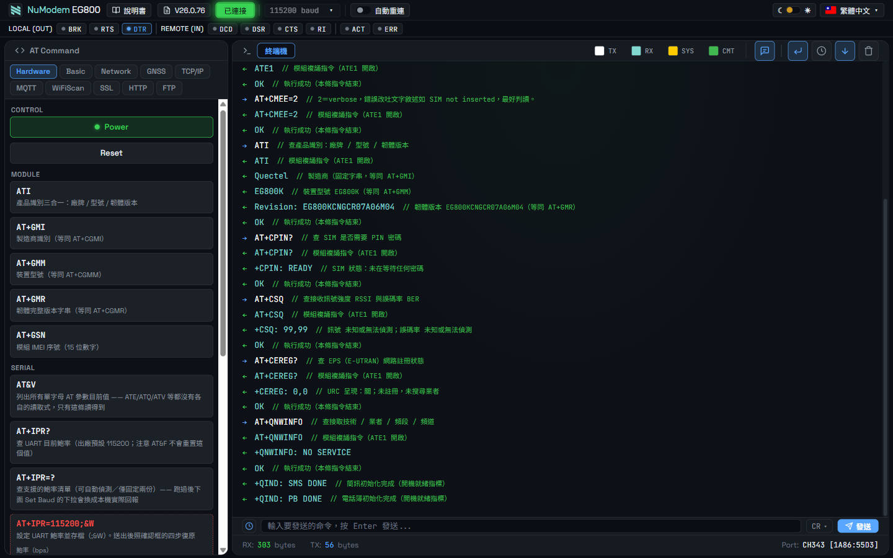
// 就是即時註解。語言與主題
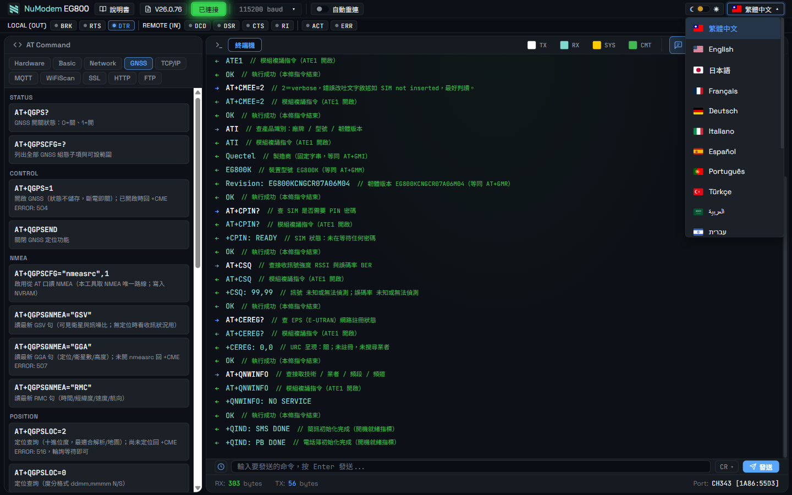
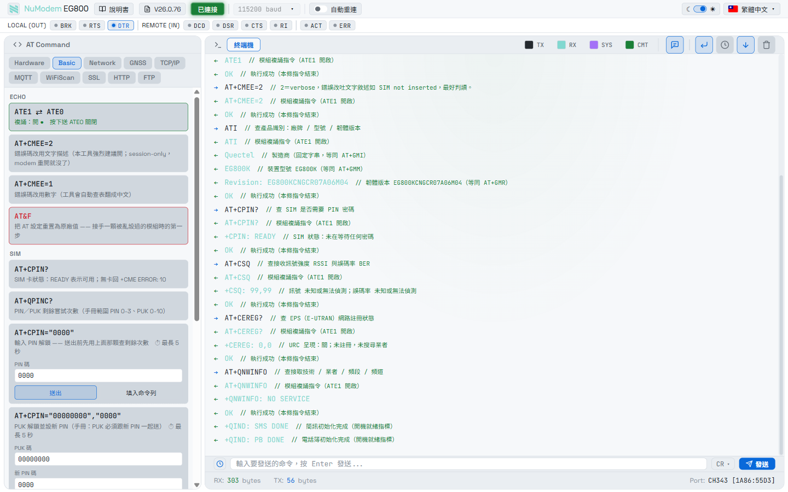
💻 系統需求
瀏覽器
NuModem 建立在 Web Serial API 之上，這個 API 只有 Chromium 系列的瀏覽器有。
| 瀏覽器 | 版本 | 狀態 |
|---|---|---|
| Google Chrome | 89 以上 | ✅ 建議 |
| Microsoft Edge | 89 以上 | ✅ 支援 |
| Opera | 75 以上 | ✅ 支援 |
| Firefox | — | ❌ 沒有 Web Serial API |
| Safari | — | ❌ 沒有 Web Serial API |
file:// 開啟就能用 —— Chromium 把本機檔案
視為安全來源，Web Serial 不會被擋。下載後按兩下 NuModem_EG800.html
即可連線；用 https:// 或 http://localhost 提供當然也可以。
唯一的差別是 file:// 下 fetch() 會被 CORS 擋掉，
但翻譯檔是用 <script> 標籤載入的，18 種語言不受影響。
硬體
| 項目 | 說明 |
|---|---|
| 模組 | Quectel EG800K 系列（本文所有實測皆在韌體
EG800KCNGCR07A06M04 上完成） |
| 介面 | USB-UART 橋接器。實測用的是 CH343（1A86:55D3） |
| 鮑率 | 115200 |
| 行尾 | CR（送 LF 模組完全不回應） |
| SIM 卡 | 要用資料功能才需要。實測用 1NCE 物聯網卡，APN 自動配發 |
控制板要能用 RTS 控制模組電源、DTR 控制 Reset 腳， 開機儀式才做得起來（見開機儀式）。
🚀 快速開始
步驟 1 —— 開啟 NuModem
用 Chrome 或 Edge 開啟 NuModem_EG800.html —— 按兩下就行，不必架伺服器。
步驟 2 —— 接上模組
按左上角的 連線。瀏覽器會跳出接埠選擇視窗，挑你的 USB-UART 橋接器。 右邊的箭頭可以展開下拉選單，直接挑先前授權過的接埠。
步驟 3 —— 確認鮑率
頂端的鮑率選單預設 115200，EG800K 出廠就是這個值，通常不用改。
步驟 4 —— 跑開機儀式
這一步不能跳過。瀏覽器打開序列埠的瞬間會重新拉高 RTS， 而這塊控制板的 RTS 是負邏輯的電源開關 —— 也就是說 連上線的同時模組就被斷電了。 詳細步驟見下一節。
🔌 開機儀式（最重要的一節）
EG800K 不是插電就會開機。這塊控制板把兩條 RS-232 的輸出訊號接到了模組的控制腳：
| 訊號 | 接到哪 | 邏輯 |
|---|---|---|
| RTS | 模組電源開關 | 負邏輯：RTS OFF ＝ 通電、RTS ON ＝ 斷電 |
| DTR | 模組 Reset 腳 | DTR ON ＝ Reset 拉高（可啟動）、OFF ＝ Reset 拉低 |
標準程序
切到 Hardware 頁簽，那裡有兩顆專用按鈕：
- Power —— 讓 RTS 走過一次 ON → OFF。
按鈕亮綠色代表電源已開（也就是 RTS 處於 OFF）。
⚠ 直接設 OFF 不保證通電，一定要先 ON 再 OFF。 - 停一秒。
- Reset —— 這是「按住才生效」的按鈕： 按下時 DTR 拉到 OFF、放開時回到 ON。中間按住約 300 毫秒。
- 等終端機出現
RDY。實測數秒內就會出現。
你也可以用訊號列上的 RTS / DTR 直接點，效果一樣，
只是要自己數順序。
怎麼確認開機成功
終端機應該依序吐出這些：
RDY ← 模組開機完成 +CFUN: 1 ← 射頻已開 +CPIN: READY ← SIM 就緒 +QUSIM: 1 +QIND: SMS DONE ← 簡訊初始化完成 +QIND: PB DONE ← 電話簿初始化完成
然後送一條 ATI 驗證，應該回廠牌、型號、韌體版本三行加 OK。
開機後建議先下的兩條
| 指令 | 為什麼 |
|---|---|
ATE1 |
開啟複誦。模組會把收到的指令原樣回吐一次， 這樣終端機上「你送的」與「模組真的收到的」可以對照，打錯字一眼就看得出來。 |
AT+CMEE=2 |
把錯誤訊息改成文字敘述。沒開的話錯誤只會是乾巴巴的 ERROR；
開了才看得到 +CME ERROR: SIM not inserted 這種可讀訊息。 |
這兩條都是 session-only，模組重開機後要重下。
AT+QURCCFG="urcport"。
模組出廠把 URC（主動回報訊息）送到 USB AT 埠，
走 UART 的本工具一條都收不到 —— 症狀是「指令都回 OK 但就是沒有後續訊息」，
GNSS 定位、TCP 資料到達、MQTT 訊息、Wi-Fi 掃描結果全部靜默。
解法：AT+QURCCFG="urcport","uart1"，這條寫 NVRAM、跨重開機有效。
📟 終端機
右半邊就是終端機。它跟一般序列終端機最大的不同是每一行都有註解。
四種顏色
| 顏色 | 代表 |
|---|---|
| TX | 你送出去的資料 |
| RX | 模組回來的資料 |
| SYS | 工具本身的系統訊息（連線、訊號變化、進出資料模式） |
| CMT | 註解 —— 也就是那些 // 開頭的說明 |
四種顏色都可以自己改，點顏色方塊就會開色盤。
註解引擎
這是 NuModem 的核心。它做兩件事：
- 解釋你送出的指令 —— 例如送
AT+QSSLSEND=4,18，旁邊會寫「對 clientID 4 送出固定長度 18 bytes： 模組回>提示後要『剛好』送滿 18 個位元組才會發出，不必送 Ctrl+Z」。 - 解讀模組的回應 —— 尤其是那些純數字的碼。
例如
+QFTPSIZE: 627,550會被拆成兩層： 「錯誤 627：FTP 未執行所請求的動作；伺服器回覆 550：動作未執行：檔案或目錄不存在」。
行尾
輸入框右邊可以選行尾。EG800K 必須用 CR， 選 LF 的話模組完全不會回應。這是最容易踩的設定。
其他
- 底部顯示累計的 RX / TX 位元組數與目前接埠名稱。
- 右上角一排按鈕：註解開關、行尾、時間戳、自動捲動、清除。
- 終端區還有衛星狀態與地圖兩個頁簽， GNSS 定位成功後會有內容。
🚦 RS-232 訊號列
連線後標題列下方會出現一整排訊號燈，分成兩組。
LOCAL (OUT) —— 你的輸出，可以點
| 訊號 | 在這塊板子上的用途 |
|---|---|
| BRK | Break 訊號 |
| RTS | 模組電源（負邏輯，OFF ＝ 通電） |
| DTR | 模組 Reset（ON ＝ Reset 拉高） |
REMOTE (IN) —— 模組的輸出，唯讀
DCD / DSR / CTS / RI，
外加 ACT（有資料流動）與 ERR（框架/同位錯誤）兩個指示。
RTS → ON 這種）比較準。
🎛️ AT 指令面板的運作方式
左半邊是十個頁簽、兩百多顆按鈕。在看個別頁簽之前，先理解這幾個共通機制， 之後每一頁都用得上。
兩種按鈕
| 樣式 | 行為 |
|---|---|
| 一般按鈕 | 點下去直接送出 |
| 虛線框 | 有參數要填。填好後可以「送出」， 也可以「填入命令列」把組好的指令丟到下方輸入框，自己再改 |
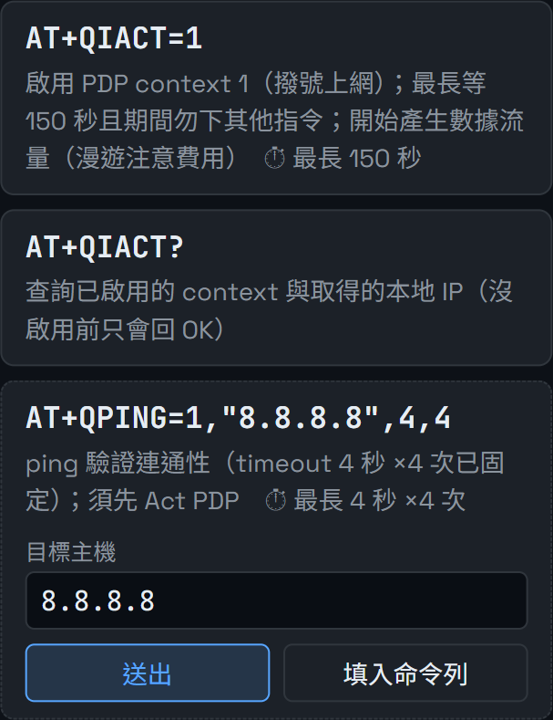
參數欄位
每個欄位都有自己的說明（滑鼠移上去會出現），寫的是本機實測的範圍，
不是照抄手冊。例如 Wi-Fi 掃描的「輪數」寫的是 1-3，
因為 AT+QWIFISCAN=? 實際就回這個範圍 —— 應用文件寫的 1-6 是錯的。
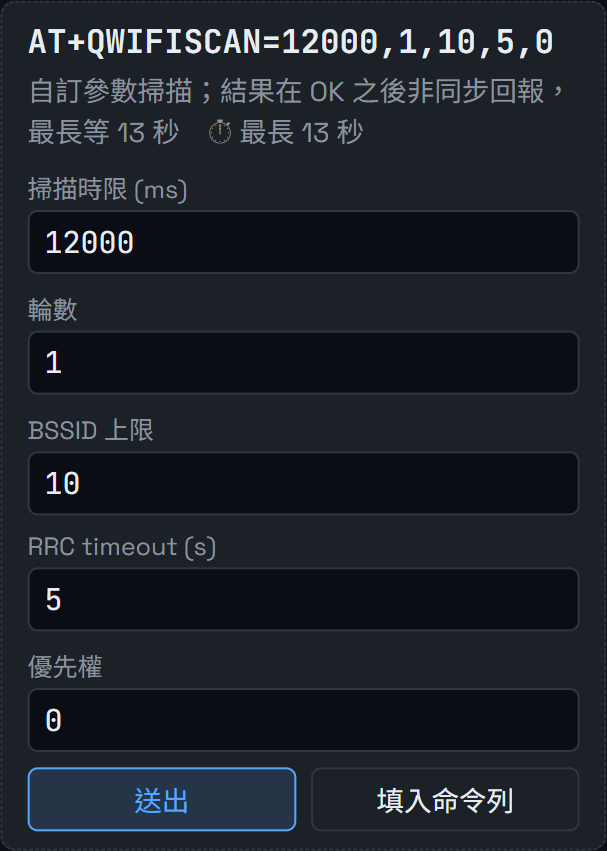
AT+QWIFISCAN=? 實際回報的，不是照抄應用文件。欄位裡預填的 1 與 10 只是預設值。兩段式送資料
有些指令不是一行送完就結束的。它們的流程是：
送出指令 → 模組回 > 或 CONNECT → 送出剛好 N 個位元組 → 模組回結果
這類按鈕有一個獨立的「資料內容」欄位，長度會自動計算並填進指令，
你不必自己數。屬於這一類的有
AT+QISEND、AT+QSSLSEND、AT+QMTPUBEX、
AT+QHTTPURL、AT+QHTTPPOST、AT+QFTPPUT。
脫身方法：用 Hardware 頁的原始位元組按鈕送一個 ESC（0x1B）。 不必關連線、也不必重開模組。
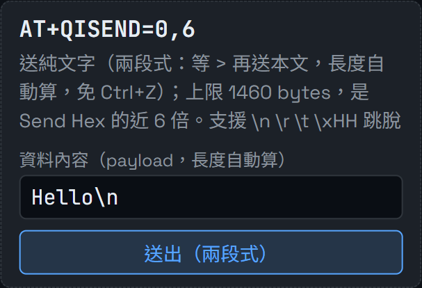
AT+QISEND=0,6 裡的 6 是工具自動算的，你只要填「資料內容」那一格。跳脫序列
資料內容欄位是單行文字框，打不出換行、Tab 這類控制字元。 所以這些欄位支援跳脫序列：
| 寫法 | 送出的位元組 |
|---|---|
\n | 0x0A 換行 |
\r | 0x0D 歸位 |
\t | 0x09 Tab |
\0 | 0x00 NUL |
\xHH | 任意位元組，HH 是十六進位 |
\\ | 反斜線本身 |
解碼發生在送出前，長度也是以解碼後的位元組數計算。
例如 hello\n 在欄位裡是 7 個字元，但送出去是 6 個位元組，
指令裡填的長度就會是 6。
\n，你就永遠收不到回應 ——
而且看起來會像「連線壞了」。
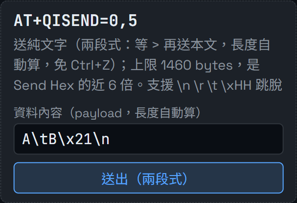
A\tB\x21\n，解碼後只有 5 個位元組 —— 指令跟著變成 AT+QISEND=0,5。逾時標示
有些 AT 指令會阻塞很久。按鈕上的 ⏱ 標示就是手冊寫的最長等待時間，
例如 AT+QIACT=1 最長 150 秒、AT+COPS=? 最長 300 秒。
看到很久沒回應時先看這個標示，多半只是還沒到時間。
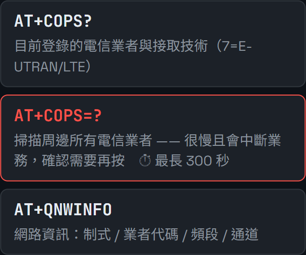
AT+COPS=? 要等 300 秒 —— 覺得沒回應時先看這裡，多半只是還沒到時間。確認對話框
會把 AT 口卡在資料模式、或是不可逆的動作（刪除遠端檔案、軟重啟模組、換鮑率） 才會跳確認框。單純「會用到流量」不會擋你 —— 那類提醒改放在按鈕說明裡。
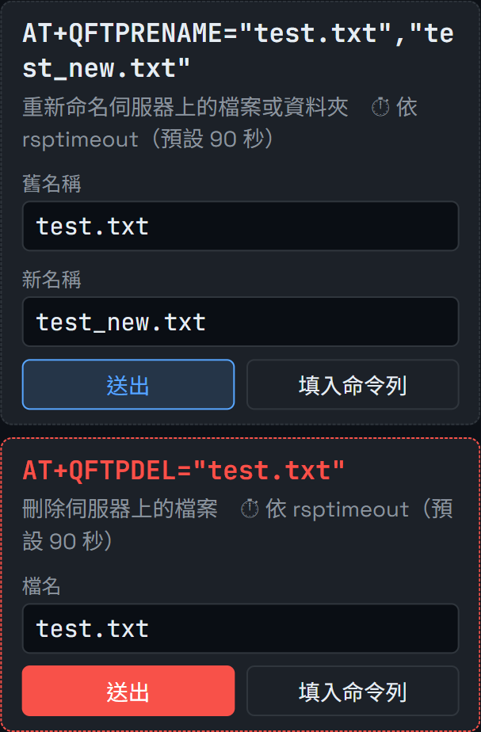
本機開關
少數按鈕下面有一個小勾選框，那是工具端的行為不是 AT 指令。
例如 AT+QICLOSE=0 底下的「偵測到 +QIURC: "closed",0 時自動關閉」。
這些選項會存在瀏覽器裡，下次開啟還在。
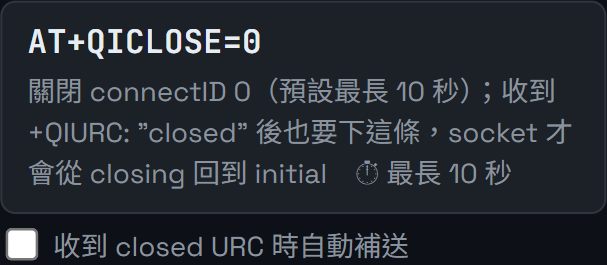
🗂️ 十個頁簽
頁簽的順序是有意義的：從左到右大致就是你該操作的順序。 Hardware 開機 → Basic 確認模組活著 → Network 確認上得了網 → 後面五個才是各種資料協定。
Hardware —— 開機與序列埠
工作原理：這一頁是整個工具的地基： Control 是開機儀式的兩顆按鈕（Power／Reset）、Module 是產品識別、 Serial 是 UART 設定、Power 是低功耗、URC 管模組主動訊息的輸出埠， 另有一排原始位元組鈕（Ctrl+Z／ESC／+++）當資料模式的逃生門。 其他頁簽都建立在兩個前提上：模組已照儀式開機、 URC 走 uart1 —— 這兩件事都在本頁完成。 本節行為與數字皆為 2026 年 8 月對實體 EG800K 的實測。
為什麼要有開機儀式：RTS＝電源、DTR＝Reset
本工具搭配的控制板把兩條 RS-232 交握訊號挪作他用，這是理解整頁的鑰匙：
| 訊號 | 實際接到 | 邏輯 |
|---|---|---|
| RTS | 模組電源開關 | 負邏輯：RTS OFF＝通電、RTS ON＝斷電 |
| DTR | 模組 Reset 腳 | DTR ON＝Reset 拉高（可啟動）、DTR OFF＝Reset 拉低 |
電路特性（實測確認）：首次連線 RTS 必須先 ON 再 OFF， 電源才會真的打開 —— 直接設 OFF 不保證通電；DTR 也要走 ON→OFF→ON， Reset 才會真的拉高。斷電（RTS ON）是硬切，模組不會送任何告別訊息。
Power 與 Reset 鈕：怎麼按、會看到什麼
兩顆鈕就是上表兩條訊號的化身，與訊號列的 RTS／DTR 指示雙向連動 （未連線時反白不可按）。Web Serial 讀不回輸出訊號的實際狀態， 訊號列顯示的是本工具送出的認知值。
- Power（切換式）：亮綠＝電源 ON（＝RTS OFF）。 開機儀式要讓 RTS 走過 ON→OFF：鈕若已亮，先點關再點開。
- Reset（momentary）：按下＝DTR OFF、放開＝DTR ON， 一按一放就是一次 Reset（標準時序中間停 0.3 秒）。
- 等 RDY：數秒內終端機會出現模組的開機宣告
RDY。 - ATI 驗證：應回
Quectel／EG800K／Revision: …／OK。回得出來＝UART 與模組都活著。
AT+CMEE=2 ——
沒開只會看到乾巴巴的 ERROR，開了才有
+CME ERROR: … 的可讀文字。兩者皆 session-only，模組每次重開都要重下。
Module：五顆識別鈕
| 按鈕 | 指令 | 會看到什麼 |
|---|---|---|
| Info | ATI |
廠牌／型號／韌體版本三合一 —— 開機後第一條就下它 |
| Vendor／Model／FW Ver | AT+GMI／AT+GMM／AT+GMR |
把 ATI 的三行拆開單獨查（各等同 CGMI／CGMM／CGMR）。
本機韌體版本實測 EG800KCNGCR07A06M04 |
| IMEI | AT+GSN |
模組 IMEI（15 位數字）。零流量，隨時可下 |
Serial：AT&V 讀參數、IPR 改鮑率
AT Params（AT&V）：列出所有單字母 AT 參數目前值。
ATE／ATQ／ATV 這些單字母指令沒有各自的查詢式，
只有這條讀得到。本機實測 E:1 Q:0 V:1 S3:13 S4:10 ——
複誦開、結果碼文字模式、行尾＝CR（ASCII 13），正是本工具解析回應的前提。
Baud?（AT+IPR?）：查 UART 目前鮑率，出廠 115200。
Baud List（AT+IPR=?）：回兩份清單 ——
前一份是可自動偵測的鮑率、後一份是僅固定模式可用的。跑過這顆之後，
Set Baud 的下拉選單會換成本機實際回報的清單。實測本機第二份清單一路列到
1000000 bps —— 手冊 §3.4 的表沒有這個值。
Set Baud（AT+IPR={rate};&W，參數卡）：
按下會先跳確認框 —— 這是全頁最容易把自己鎖在門外的一顆鈕。
①
OK 一回就立即生效，
本工具下一刻起與模組雞同鴨講；②
AT&F（原廠重置）不會把鮑率改回來 —— 別指望它救你；③ 不加
&W 就不存檔 —— 而重連＝斷電，模組會醒在舊鮑率、
你的埠設定卻停在新鮑率，雙重失聯。
所以本工具強制 ;&W 合體寫法。復原四步（確認框也會提醒）：斷線 → 改連線區的鮑率 → 重連 → 重跑開機儀式。
Power：QSCLK 低功耗
Sleep?（AT+QSCLK?）：查模組是否允許進入睡眠。
本機實測出廠為 0＝停用、模組常醒。
本頁只提供查詢鈕：睡著的模組會停止回應 AT，手冊的喚醒方式是拉低 DTR ——
但本板的 DTR 已接去當 Reset 腳（見本節開頭）。若在命令列自行開了睡眠而叫不醒，
重跑開機儀式（斷電重開）即可脫困；細節見官方低功耗應用筆記。
URC：收不到訊息時，第一個來這裡
URC（Unsolicited Result Code，非請求結果碼）是模組「未經請求就主動吐出」
的訊息，不是任何指令的回應 —— 開機的 RDY、TCP 資料到達、MQTT 訊息、
Wi-Fi 掃描結果、GNSS 韌體載入通知全是。它的輸出埠
出廠預設是 USB 埠（usbat） —— 走 UART 的本工具一條都收不到，
症狀非常典型：指令都回 OK，就是等不到訊息。
| 按鈕 | 指令 | 用途 |
|---|---|---|
| URC Port? | AT+QURCCFG="urcport" |
查 URC 現在送去哪 —— 收不到 URC 時第一條就查它；
要回 "uart1" 才收得到 |
| URC Ports | AT+QURCCFG=? |
本機支援哪些輸出埠。實測回 ("usbat","usbmodem","uart1")，
沒有手冊提過的 "all"（手冊有註部分機型不支援） |
| URC → UART | AT+QURCCFG="urcport","uart1" |
切到主 UART。寫 NVRAM、跨重開機保留，改一次就好 |
| URC Switch | AT+QINDCFG="all" |
URC 總開關，「收不到 URC」的另一大原因。 實測本機出廠即為 1（開），問題幾乎都出在輸出埠 |
原始位元組鈕：資料模式的逃生門
不少指令是兩段式：先送指令、等模組回 > 提示、
再送本文。進了這種資料模式之後，模組會把你打的每個字元都當資料吞下去 ——
包括你想下的 AT 指令。長度算錯、中途反悔、指令卡住時，一般按鍵救不了，
要靠這排送單一原始位元組的鈕：
| 鈕 | 送出 | 什麼時候用 |
|---|---|---|
| Ctrl+Z | 0x1A | 資料模式的結束符：把已累積的內容真正送出去 |
| ESC | 0x1B | 取消資料模式、丟棄已累積內容。 兩段式指令卡住、AT 口不再回應時的首選脫身鍵（手冊 §2.3.8） |
| +++ | 三個 + 號（原始位元組） | 從透明資料模式（如 FTP 的 COM: 傳輸）逃回 AT 模式。 規矩很硬：前後各靜默 1 秒、絕不能帶 CR/LF —— 實測加了 CR 就不生效，必須用這顆鈕送、不能在命令列打 |
ATO 回到資料模式續傳，
實機上 ATO 只回 NO CARRIER，傳輸已經被中止。
把 +++ 當成緊急煞車用，別指望煞完還能繼續開。
疑難排解
| 症狀 | 原因與解法 |
|---|---|
| 什麼指令都沒回應 | 依序查三個嫌疑犯：① 沒跑開機儀式（重新整理過頁面就一定是它）； ② 行尾設成 LF —— 模組只認 CR，LF 完全無回應； ③ 鮑率不合（見四步復原） |
| 按了 Reset 卻等不到 RDY | 先看 Power 鈕有沒有亮 —— 模組沒電，Reset 按再多次也沒用； 首次連線電源要走過 ON→OFF |
| 指令都回 OK，URC 就是不來 | 八成是 urcport 還在出廠的 usbat：按 URC Port? 查、URC → UART 改； 再不行查 URC Switch 總開關 |
| AT 口突然「吞指令」，打什麼都沒回應 | 卡在資料模式，打的字全被當資料收走了 —— 按 ESC 脫身 |
Basic —— SIM、診斷與基本狀態
工作原理：這一頁是每次連線後的起點。開機儀式跑完、終端出現
RDY 之後，先來這裡做三件事：把錯誤訊息換成看得懂的格式、
確認 SIM 就緒、認一下這張卡是誰。整頁除了 AT&F 與 PIN／PUK 解鎖，
全部是唯讀查詢——按了不會改變模組狀態；
會動到連線狀態的指令集中在 Network、TCP/IP 等其他頁簽。
本節樣本皆為 2026 年 8 月對實體 EG800K
（韌體 EG800KCNGCR07A06M04）的實測值。
開機之後：RDY 不等於 SIM 就緒
RDY 是模組開機完成時主動送出的 URC。
它只代表 AT 介面活了，SIM 卡還在後面慢慢初始化。
實測：RDY 一出現就送 SIM 相關指令，會回
+CME ERROR: 14（SIM busy）甚至 +CME ERROR: 13（SIM failure）；
等約 6 秒後再送就一切正常。
AT+QINISTAT，等 bit 1（CPIN 就緒）亮起再繼續。
複誦（ATE）：「模組回音」與「終端回顯」是兩回事
複誦是模組把你送過去的字元原樣回送（ATE1 開、
ATE0 關）；終端機的本地回顯則是工具端自己把你打的字
先印上畫面。兩個開關互相獨立：兩邊都開，每個字就會出現兩次。
- 本頁的複誦切換鈕單鍵切換模組複誦。
開機預設為開（實測 AT 參數
E:1佐證）。 - 鈕上顯示的狀態不是憑空記的——工具依實際回應自動校正
（收到複誦行即視為開）；你在命令列手打
ATE0／ATE1／AT&F，鈕的狀態也會同步，不會脫節。 - 切換是 session-only：模組重開就回到預設。要寫進開機預設得另外下
AT&W（本頁沒做這顆鈕，需要就在命令列手打）。
把錯誤訊息變成看得懂的（CMEE）
| 按鈕 | 效果 |
|---|---|
Verbose ErrAT+CMEE=2 |
錯誤碼改用文字描述。實例：GNSS 未定位時，數字模式回
+CME ERROR: 516，文字模式回
DSAT_CME_GNSS_NOT_FIXED_NOW——後者不查表就知道發生什麼事。
本工具強烈建議開機儀式後就按這顆 |
Numeric ErrAT+CMEE=1 |
錯誤碼用數字——工具會自動查表把號碼翻成中文註解 |
CMEE=2，少數子系統（如檔案系統 FILE 錯誤）仍會文字、數字混出，
寫解析程式時兩種形式都要接。
AT&F：回原廠預設——影響範圍
Factory Reset 鈕把 AT 設定重置為原廠值，
是接手一顆被亂設過的模組時的第一步。這是本頁唯一按下去會先跳確認的按鈕。
已實測確認的影響範圍：會把複誦設回開啟
（複誦切換鈕的狀態會自動跟上）、不影響鮑率；
其餘各條設定是否被還原，見手冊 AT&F 條目逐項確認。
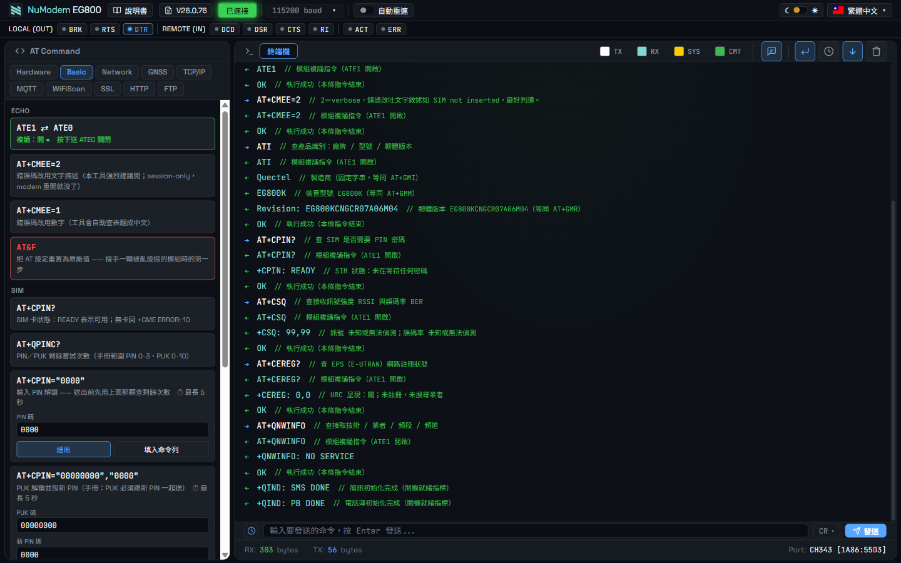
SIM 三連查：在不在、等不等密碼、初始化到哪
| 按鈕 | 問的問題 | 判讀 |
|---|---|---|
Card In?AT+QSIMSTAT? |
卡有沒有插好 | 回應兩欄：第一欄是插拔 URC 開關、第二欄才是卡狀態，別看錯欄。 本機這顆有誤報前科，見下方警告 |
SIM PINAT+CPIN? |
卡在不在等密碼 | +CPIN: READY ＝「目前沒有在等任何密碼」。
⚠ 不等於這張卡不需要 PIN——設了 PIN 的卡解鎖後也回 READY。
無卡回 +CME ERROR: 10 |
Init StateAT+QINISTAT |
初始化進度 | 位元遮罩：1＝CPIN 就緒、2＝SMS、4＝電話簿，7＝全部完成。 本機實測開機穩定後讀到 3（電話簿位元未設）—— 判斷「能不能開工」看 bit 1 就夠，別死等 7 |
AT+QSIMSTAT? 回
0,0（卡已移除），但同一時刻 CPIN READY、網路已附著、已取得 IP——
卡明明好好的。推測是控制板未接 SIM_DET 偵測腳（或 AT+QSIMDET 未啟用），
讀值恆為「未插入」。判斷卡在不在，以 AT+CPIN? 或
AT+QINISTAT 為準。
這張卡是誰：IMSI 與 ICCID
IMSI 鈕（AT+CIMI）回一串裸數字，
是這張卡在行動網路上的用戶識別碼。本機實測 901405117661468：
開頭三碼（MCC）是 901 ＝ 國際漫遊卡號段——
本機這張是 1NCE 物聯網卡，這也解釋了為什麼 AT+CEREG?
一直回 0,5（已註冊、漫遊）：不是訊號異常，
是這種卡的常態。跑數據測試前先認出漫遊卡，留意流量資費。
ICCID 鈕（AT+QCCID）查卡片序號，
實測回 +QCCID: 89882280666176614687。
⚠ 手冊裡沒有 AT+CCID 這條指令——
別家模組教學常見的那條在這裡行不通，要用 Quectel 專屬的 AT+QCCID。
PIN 解鎖：先查剩餘次數，再動手
- 先按 PIN Left（
AT+QPINC?）看剩餘嘗試次數—— 手冊給的範圍：PIN 剩 0–3 次、PUK 剩 0–10 次。 動手前先知道自己還剩幾發。 - 卡在等 PIN 時按 Enter PIN：會先展開參數卡
讓你填 PIN 再送出（指令樣板
AT+CPIN="{pin}"，最長等 5 秒）。 - PIN 次數用完、卡改要 PUK 時按 Unlock PUK：
手冊規定 PUK 必須和新 PIN 一起送
（
AT+CPIN="{puk}","{newpin}"），同樣走參數卡、最長等 5 秒。
狀態三顆：時鐘、電壓、網路時間
| 按鈕 | 看什麼 | 實測與判讀 |
|---|---|---|
ClockAT+CCLK? |
模組 RTC 時鐘 | +CCLK: "26/08/01,00:55:32+32"。
時區欄 +32 的單位是「刻」（15 分鐘）：32 × 15 分＝UTC+8。
本機實測 RTC 已被網路對時，時間與時區皆正確 |
BatteryAT+CBC |
供電電壓 | 部分韌體不支援、回 ERROR 屬正常；本機韌體有支援，
實測 +CBC: 0,0,4264——末欄是電壓（mV），即 4.264 V |
Net TimeAT+QLTS=2 |
網路同步推算的目前本地時間 | 實測 +QLTS: "2026/08/02,11:46:47+32,0"。
與 Clock 的差別在來源：CCLK 讀模組自己的 RTC、
QLTS 直接取網路時間；年份格式也不同（RTC 兩碼、QLTS 四碼），解析別搞混 |
疑難排解
| 症狀 | 原因與解法 |
|---|---|
| RDY 剛出現就查 SIM，回錯誤 14 或 13 | SIM 還在初始化（14＝SIM busy；13＝SIM failure 在這階段也出現過）。 等約 6 秒再送即正常，別急著斷定卡壞了 |
| Card In? 說卡被移除，其他功能卻都正常 | SIM_DET 偵測腳問題（本機實測案例），不是卡的問題。
改看 AT+CPIN?／AT+QINISTAT |
| 畫面上每個字都出現兩次 | 模組複誦與終端本地回顯同時開著——按一下複誦切換鈕即可 |
| 錯誤只回冷冰冰的數字 | 還沒開 CMEE。按 Verbose Err；它是 session-only， 每次開機儀式後都要重按 |
| 指令送出去完全沒有回應 | 重開 port 會重新 assert RTS＝斷電，模組其實已重開機。 必須重跑完整開機儀式，跳過則全部無回應 |
Network —— 註冊、業者、射頻
工作原理：所有資料功能要能用，前提是已註冊到電信網路 且 PDP 資料通道已就緒 —— 這一頁就是入網的儀表板與開關， 「連不上網」的排查都從這裡開始。本節數值皆為 2026 年 8 月實體 EG800K 實測。
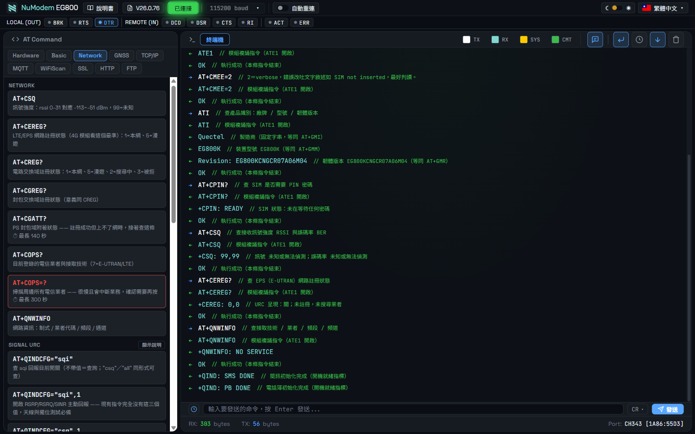
開始之前：先把 URC 切到 UART
EG800K 出廠把主動回報訊息（URC）送到 usbat（USB AT 埠），
本工具走 UART —— 所有 URC 一條都收不到：訊號回報、
TCP／MQTT／Wi-Fi 掃描結果全部靜默，症狀是「指令都回 OK，就是沒訊息」。
AT+QURCCFG="urcport" 查詢，
不是 "uart1" 就用切換鈕改過去 —— 設定寫 NVRAM，改一次跨重開機有效。
第一步：確認註冊狀態
開機儀式看到 RDY 後，先按 AT+CEREG?（4G 模組看這條最準）。
三顆註冊鈕對應三個網域：CEREG＝LTE/EPS、CREG＝電路交換域、
CGREG＝封包交換域，第二個數字（stat）判讀相同：
| stat | 意義 | 怎麼辦 |
|---|---|---|
| 0 | 還沒註冊 | 剛開機常見，等幾秒再查 |
| 1 | 已註冊（本網） | 正常，往下走 |
| 2 | 搜尋中 | 等 |
| 3 | 被網路拒絕 | 查 SIM／資費，CEER 看原因 |
| 5 | 已註冊（漫遊） | 本機的正常態，見下 |
0,5：
SIM 是 1NCE 物聯網卡（MCC 901 國際漫遊卡），在哪國都算「漫遊」，
看到 5 當 1 用。
註冊成功但上不了網，接著按 AT+CGATT? 查封包域附著；
必要時按 AT+CGATT=1 手動附著，失敗再用 AT+CEER
查原因（與 TCP/IP 頁 QIGETERROR 不同層）。
CGATT 最長阻塞 140 秒，別連打。
現在掛在哪家業者、哪個頻段
AT+COPS? 查目前登錄的業者（末位 7＝LTE）。
陷阱：業者名可能是空字串 —— 實測回 +COPS: 0,0,"",7，
不是故障。要看業者改按 AT+QNWINFO（制式／業者／頻段／通道）：
+QNWINFO: "FDD LTE","46692","LTE BAND 8",3750
46692＝中華電信、Band 8；沒服務時回 NO SERVICE。
本漫遊卡會自己挑網：不同日期實測掛過中華電信 Band 8 與遠傳（466-01）Band 3，
換業者換頻段都正常。AT+COPS=? 掃描周邊所有業者：
最長阻塞 300 秒且會中斷現有業務，確認需要再按。
訊號強度與品質：CSQ 只是粗略值
AT+CSQ 回 rssi 與 ber：rssi 0–31 對應 -113～-51 dBm，
99＝偵測不到（剛開機常見，等幾秒）。實測 rssi 18–24（-77～-65 dBm，良好）；
ber 恆為 99，無參考值。LTE 真正的品質三要素
RSRP（強度）／RSRQ（品質）／SINR（訊噪比，低＝被干擾）
只有 Signal URC 組拿得到（AT+QINDCFG="sqi" 不帶值＝查開關）：
| 按鈕 | 指令 | 作用 |
|---|---|---|
| LTE Quality | AT+QINDCFG="sqi",1 |
開 RSRP／RSRQ／SINR 回報 —— 天線與擺位測試必備。 只在訊號「有變化」時推播，沒動靜就包住或拔插天線；設定不跨重開機 |
| Signal Push | AT+QINDCFG="csq",1 |
訊號一變就回報，取代狂按 CSQ |
| URC Off／On | AT+QINDCFG="all",0／1 |
被洗版時一鍵靜音 —— 記得事後開回來 |
PDP 通道：3GPP 層 vs TCP/IP 頁
PDP context＝電信網路配給的「資料通道」，有它才有 IP。本組是 3GPP 標準層唯讀查詢：
AT+CGDCONT? 列 context 與 APN、AT+CGACT? 列啟用狀態
（最長阻塞 150 秒；⚠ 寫入式參數順序相反）、AT+CGPADDR
列取得的 IP。TCP/IP 頁的 QIACT?／QICSGP 是
Quectel 自家堆疊，不是同一層 —— 並排比對可分辨故障側：
這裡有 IP、那邊沒有＝網路給了但堆疊沒啟動。本機開機即自動啟用 PDP 取得 IP。
AT+QGDCNT? 查累計流量（第一個數字送出、第二個接收），
漫遊卡測流量必用。⚠ 實測推翻按鈕提示的「跨開機累計」：
計數器預設不存 NV，一斷電（含重載頁面）就歸零 —— 要當場記，
或 AT+QGDCNT=1 存 NV。
排障實戰：本卡只允許單一 PDP
TCP/IP 頁按 AT+QIACT=1 卻回 ERROR（572,operation not
allowed）？本卡固定劇本：開機後 3GPP 層已自動啟用一個 PDP，
但 context 編號會浮動（實測見過 1 與 9）；再開第二個回
+CME ERROR: 100 ⇒ 網路只允許單一 PDP；而 QIACT 的
contextID 範圍只有 1–8，PDP 被開在 9 時 Quectel 堆疊根本碰不到。
解法兩步（每次開機後做一次）：
AT+CGACT? ← 看是哪個 cid（編號會浮動，不能省） AT+CGACT=0,<那個 cid> ← 3GPP 層讓出名額 AT+QIACT=1 ← TCP/IP 頁；回 +QIACT: 1,1,1,"10.187.7.8" 即成功
QICSGP 設 APN 本卡可省 —— 實測模組會自動同步網路配下的 APN
（iot.1nce.net）；換需帳密的企業 APN 卡才必要。
AT+QIACT?
照樣回 IP —— 這時它會騙人，要與 AT+CGACT? 交叉比對
（實測：1,0 與 9,1＝漂到 9）。
解法：AT+QIDEACT=1 → AT+CGACT=0,<漂到的 cid> →
AT+QIACT=1，再 ping 驗證。
CFUN 功能等級與射頻控制
RF Control 整組都會改變模組狀態，全是按下前再確認的紅框鈕。
先按 AT+CFUN? 看目前等級再動手：
| 指令 | 等級 | 意義 |
|---|---|---|
AT+CFUN=1 | 全功能 | 射頻全開；復原一律按這顆 |
AT+CFUN=4 | 飛航 | 收發全關、SIM 還在 —— 測「重新入網」的起點 |
AT+CFUN=0 | 最小 | SIM 也停用；手冊僅寫 Minimum functionality，未列細節 |
AT+CFUN=1,1 | 軟重啟 | 重啟整顆模組。⚠ AT 口短暫失效，要重新等 RDY |
CFUN 最長阻塞 15 秒。SIM 若有 PIN 鎖，切回 CFUN=1 後要重輸 PIN
才會註冊。AT+CGATT=0（PS Detach）脫離封包域 ——
會打掉所有 TCP／MQTT 連線，測「重新附著」才用。
進階：QENG 讀基地台資訊（命令列輸入）
本頁沒有按鈕 —— 命令列輸入 AT+QENG="servingcell"
讀服務基地台參數，實測關鍵欄位：
| 欄位 | 實測值 | 判讀 |
|---|---|---|
| MCC／MNC | 466／01 | 臺灣／遠傳電信 |
| Cell ID／TAC | ABCDE02／1234（hex） |
十進位 180149762／4660；eNodeB＝ECI≫8＝703710、扇區＝2 |
| PCID／EARFCN | 144／1550 | 實體小區識別（非全域唯一）／Band 3 |
| RSRP／RSRQ／RSSI／SINR | -113／-18／-92／-1 | RSRP 低於 -100 算差；SINR -1 dB＝品質不佳 |
ABCDE02 只會查無此筆。
另 AT+QENG="neighbourcell" 只回 PCID、
無全域 Cell ID（LTE 標準限制）。
疑難排解
| 症狀 | 原因與解法 |
|---|---|
| 指令都回 OK，主動訊息全沒出現 | urcport 在 usbat（出廠值）—— Hardware 頁簽切 uart1 |
QIACT=1 回 ERROR（572） |
單一 PDP 名額被占走 —— 走上面的兩步排障 |
| 連續請求全部固定 30 秒逾時 | PDP 漂移 —— AT+CGACT? 交叉比對，別只信 QIACT? |
GNSS —— 衛星定位
工作原理：GNSS 是獨立於行動網路的功能 ——
不需要 SIM 卡有網、不需要 PDP、不耗流量（AGNSS 除外，見下）。
開啟後模組自己接收衛星訊號，你用 AT+QGPSLOC 輪詢定位結果。
本節所有秒數與行為都是 2026 年 8 月對實體 EG800K 的實測值。
開始之前：天線決定一切
定位失敗的第一大原因不是指令下錯，是天線收不到訊號。 實測對比：室內、天線不佳時，模組能列出 38 顆衛星的位置卻一顆都聽不到 （SNR 全部 00）；換上主動式（active）GNSS 天線並放到窗邊後， 冷啟動 95 秒內就定位成功。
$GNGGA 會回「使用衛星 00 顆、定位品質 0」，
AT+QGPSLOC 永遠回錯誤 516。
請把天線移到窗邊或戶外再開始 —— 這不是耐心問題，是物理問題。
第一次定位：五個步驟
- 跑開機儀式（見〈開機儀式〉一節）。 ⚠ 每次重新整理頁面都等於斷電，GNSS 的開啟狀態與收到一半的星曆全部歸零， 要從這一步重來。
- 確認 URC 走 UART：
AT+QURCCFG="urcport"要回"uart1"。出廠值是"usbat"，不改的話很多結果訊息 會被送去 USB 埠，這裡什麼都看不到（設定寫 NVRAM，改一次就好）。 - 開 GNSS：按
AT+QGPS=1。 幾秒內會看到+QGPS: "firmware",0,0（GNSS 韌體載入成功）。 已經開著再按會回+CME ERROR: 504，無害。 - 看收訊：按
AT+QGPSGNMEA="GSV"讀可見衛星。 終端區會自動打開衛星頁簽，畫出訊號柱狀圖與天空圖 —— 判讀方式見下段。 - 輪詢定位：每 5–10 秒按一次
AT+QGPSLOC=2。 回DSAT_CME_GNSS_NOT_FIXED_NOW（錯誤 516）代表還沒定到， 繼續等就好。成功時會回座標， 終端區自動打開地圖頁簽並把位置畫上去。
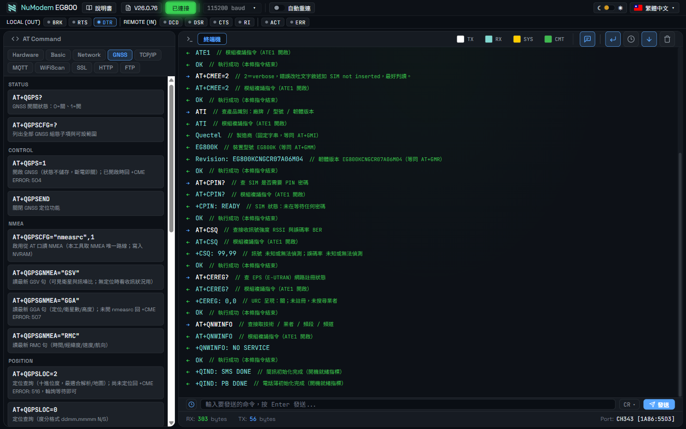
判讀衛星頁：「看得到」不等於「聽得到」
GSV 每顆衛星有四個數字：編號、仰角、方位角、SNR（訊號雜訊比，dB-Hz）。 前三個只是「它應該在天上哪裡」，只有 SNR 才代表真的收到訊號。
| SNR | 意義 |
|---|---|
| （空）或 00 | 完全沒收到 —— 只知道它在哪，聽不到它 |
| 14–28 | 邊緣：解調星曆常出錯重來，定位又慢又不穩 |
| 30 以上 | 可穩定解調；多數衛星到這個水準，定位就快了 |
| 40 以上 | 開闊天空＋好天線的水準 |
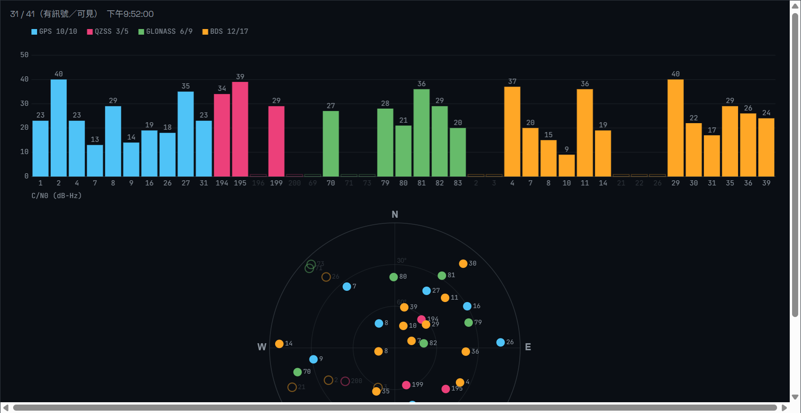
為什麼要等：冷啟動的物理限制與實測時間
定位需要每顆衛星的精確軌道（星曆），而星曆藏在衛星以 50 bps 廣播的訊號裡 —— 一顆要連續正確解調約 18–30 秒， 錯一個位元就重來，還得湊滿至少 4 顆。這就是「冷啟動」慢的原因。 本機實測（同一地點、主動式天線、量測解析度 ±5 秒）：
| 情境 | 首次定位時間（實測） |
|---|---|
| 冷啟動（無任何輔助） | 95 秒 |
| 冷啟動＋AGNSS | 52 秒（另外約 20 秒就先回一筆粗略位置） |
| AGNSS＋近期星曆殘留（日常重複使用） | 25 秒 |
AT+QGPSEND，別斷電。
AGNSS 加速：完整流程
原理：AGNSS 把星曆改成從網路下載（每次約 32–34 KB）， 跳過 50 bps 慢速解調。它不能無中生有衛星訊號 —— 室內照樣定不到位，它省的只有「等星曆」的時間。
兩個最容易漏掉的前提，漏掉任何一個 AGNSS 就靜靜地完全不動作，不會報錯：
| 前提 | 指令 | 陷阱 |
|---|---|---|
| AGNSS 已啟用 | AT+QAGPS=1 |
⚠ 重開機才生效（寫 NVRAM，設一次就好） |
| PDP 已啟用 | AT+QIACT=1 |
⚠ 每次開機都要重下。AT+CGATT? 回 1 不算數 ——
附著只是網路層註冊；要 AT+QIACT? 回得出
+QIACT: 1,1,…,"IP" 才有資料通道 |
完整順序（每次開機後）：
AT+QIACT=1 ← 開資料通道（最長等 150 秒；產生流量） AT+QIACT? ← 必須看到 +QIACT: 1,1,…,"IP" AT+QGPS=1 ← 開 GNSS；AGNSS 會在此時自動下載輔助資料 AT+QGPSLOC=2 ← 每 5–10 秒輪詢
怎麼確認 AGNSS 真的在動？本機韌體不會發
+QGPS: "agps" 之類的提示（實測確認），要看旁證，三選一即可：
AT+QGDCNT?在AT+QGPS=1前後查兩次， 收方向多了約 30 KB ＝ 輔助資料下載了- GSV 在幾秒內就列出大量衛星的位置（SNR 可能還是 00）—— 位置是下載來的，自己解調不可能這麼快
$GNGGA的時間欄位有值（時間也是輔助資料的一部分）
AT+QGPSLOC 可能回出一筆座標，
但仔細看：HDOP 0.00 / alt 0.0 / nsat 00 ——
那是輔助資料裡的參考位置注入，不是量測結果，誤差可能很大。
真定位的判準：使用衛星數 > 0、定位模式 ≥ 2、HDOP > 0。 寫自動化或產品邏輯時，不能只看「有沒有回座標」。
apflash：斷電重開也能快（有條件）
AT+QGPSCFG="apflash" 出廠即為 1：每次定位成功會把星曆存進
flash，下次開機自動匯入 —— 一小時內斷電重開就從冷啟動變快速熱啟動，
零流量。兩個限制：星曆約一小時就過期；
以及要先成功定位過一次，flash 裡才有東西可匯入 ——
從來沒定位成功的模組，apflash 幫不上忙。
定位成功之後：地圖頁
每次 AT+QGPSLOC 成功，位置就畫進地圖頁：
藍色標記是最新位置、青色線是移動軌跡、每個軌跡點滑鼠移上去有當地時間與高度。
摘要列顯示座標／高度／HDOP／衛星數，時間自動依經度換算當地時區。
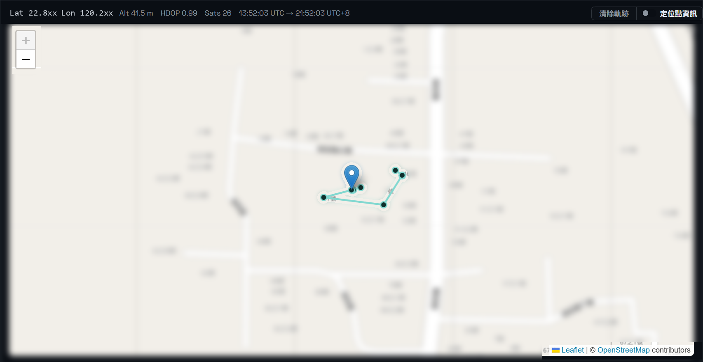
疑難排解
| 症狀 | 原因與解法 |
|---|---|
+CME ERROR: 505 |
GNSS 還沒開 —— 先 AT+QGPS=1。
每次重開機（含重載頁面）都要重開 |
+CME ERROR: 504 | GNSS 已經開著，重複開而已，無害 |
| 錯誤 516（NOT_FIXED_NOW） | 還沒定到位。GSV 有訊號（SNR ≥ 30）就繼續等； 全部 00 就是天線／環境問題，等再久也沒用 |
| 拿不到連續 NMEA 流 | 出廠 outport 是 usbnmea，連續流走 USB 埠。
AT 口用 AT+QGPSGNMEA 逐句抓即可（需先
nmeasrc,1，本頁按鈕已備） |
AT+QGPSDEL 想強制冷啟動 |
⚠ 別用 —— 本機韌體 =? 回 (0-2)
但三個參數全部拒收（INVALID_PARA），官方文件也沒收錄。
要冷啟動：apflash,0 ＋ 斷電重開（測完記得改回 1） |
| 換了設定沒生效 | QAGPS 重開機才生效；gnssconfig（星座組合）
也是。改完要跑一次開機儀式 |
TCP/IP —— 資料連線的根
工作原理：這一頁是所有資料協定的地基。PDP context （電信網路配給的資料通道）只在這一頁啟用與停用，SSL／HTTP／MQTT／FTP 各頁只放唯讀查詢，避免同一條指令兩處互踩。 本節陷阱與秒數皆為 2026 年 8 月實機實測。
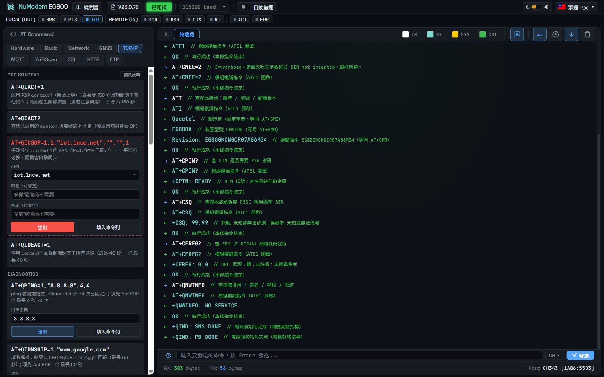
第一步：啟用 PDP（QICSGP／QIACT／QIDEACT）
按 Act PDP（AT+QIACT=1）：最長阻塞 150 秒、
期間勿下其他指令，從此開始產生流量（漫遊注意費用）。成功後一定要按
Query IP（AT+QIACT?）確認回 +QIACT: 1,1,1,"IP位址"
—— 沒啟用前只回 OK。收線按 Deact PDP（AT+QIDEACT=1，
最長 40 秒），會強制關閉其下所有連線。Set APN
（AT+QICSGP）平常不必按 —— 模組會自動同步網路配的 APN
（實測 1NCE 卡開機讀回已是 iot.1nce.net），要帳密的企業 APN 才需要。
AT+QIACT 只碰得到 1–8。解法：Network 頁 AT+CGACT?
查編號 → AT+CGACT=0,<編號> 讓出名額 → 再按 Act PDP。
測到一半全掛？
AT+QIACT? 會騙人 —— PDP 漂移時
它照樣回 IP，要與 AT+CGACT? 交叉比對才看得出來。復原：
Deact PDP → AT+CGACT=0,<漂移編號> → Act PDP → Ping 驗證。
開連線：OK 只代表「指令收下」
按 Open TCP、參數卡填主機與埠
（AT+QIOPEN=1,0,"TCP","主機",埠,0,0；context 1、connectID 0、
buffer 模式已固定）。OK 只代表指令收下，成敗看 URC
+QIOPEN: 0,<err>：0＝成功，最長 150 秒；
563＝connectID 還開著，先按 Close Sock。
All Socks（AT+QISTATE）列出所有 socket，
state 2＝已連上。
送資料：三種方式
| 按鈕 | 說明 |
|---|---|
Send TextAT+QISEND=0,<len> |
定長兩段式：等 > 再送本文，長度自動算、
免 Ctrl+Z。純文字首選；上限 1460 bytes、
支援 \n \r \t \xHH 跳脫 |
Send Var 三顆鈕AT+QISEND=0 |
變長式：進資料模式一直收，見 Ctrl+Z（0x1A）才送出 —— 可分次寫，見下段 |
Send HexAT+QISENDEX=0,"hex" |
單行式，不進資料模式。可送任意位元組（含 0x00）； hex 上限 512 字元＝實際 256 bytes |
送出（續寫）第一次按進資料模式、之後每按追加一段 （已在資料模式時不重送指令，重送會變成資料）；送出後自動結束 追加並補 Ctrl+Z，只送一段時最快；結束（Ctrl+Z）把累積內容 一次送出。進資料模式時終端機會標示；放棄按 ESC Cancel（0x1B，兩段式卡住時的脫身鍵）。 ⚠ 資料不能含 0x1A（會被當提早結束），控制字元改用 Send Hex。
AT+QISEND=0,0）查已送／已 ACK，
看 acked 才算數。
收資料：不會自己出現，要按 Read Data
buffer 模式下收到的資料不會自動出現在終端機：模組只發
+QIURC: "recv",0 通知，要按 Read Data
（AT+QIRD=0,1500）取出，且重複讀到回 +QIRD: 0
為止 —— 沒讀乾淨就不會再有下一次通知。
Unread Len（AT+QIRD=0,0）查總收／已讀／未讀。
收發完按 Close Sock（AT+QICLOSE=0，最長 10 秒）。
⚠ 完全收不到 recv 通知？Hardware 頁查
AT+QURCCFG="urcport" 是不是 uart1 ——
出廠值是 USB 埠，URC 全跑去那邊。
內建對端 tcpbin.com 的兩個脾氣
Open TCP 預設對端是免費 echo 伺服器 tcpbin.com:4242，
兩個實測脾氣：
- 逐行 echo，結尾要換行（0A）：送 Hello 無 0A 等 6 秒
無回應，補 0A 後 0.1 秒立刻收到。Send Text 結尾加
\n、 Send Hex 尾加0A。 - 15 秒閒置逾時：閒置就被斷線並收到
+QIURC: "closed",0。這與 QIRD 無關（它只讀本地緩衝、 不觸網）。要維持連線每 10 秒內送一次資料。收到 closed 後 socket 停在 closing， 必須先按 Close Sock 才能重用，否則 QIOPEN 回 563。
診斷三件套：Ping／DNS Lookup／NTP Sync
| 按鈕（都須先 Act PDP） | 行為與實測 |
|---|---|
PingAT+QPING |
timeout 4 秒 ×4 已固定。實測 8.8.8.8 全通、RTT 160–270 ms。 ⚠ 很多伺服器擋 ICMP，ping 不通不代表 TCP 連不上， 連通性直接 Open TCP |
DNS LookupAT+QIDNSGIP |
結果以 URC +QIURC: "dnsgip" 回報（最長 60 秒），
實測分兩段、含多筆 IP |
NTP SyncAT+QNTP |
最長 125 秒、埠 123 已固定，結果看 URC +QNTP。
⚠ 時間是 UTC 卻帶本地時區標記（+32 刻＝GMT+8，實測差正好
8 小時）；看本地時間用 AT+CCLK? |
出錯了：先按 Last Error，再做 30 秒鑑別
指令回 ERROR 就立刻按 Last Error
（AT+QIGETERROR）—— 只保留最後一條，被下一個錯誤蓋掉就查不到。
它查 Quectel 堆疊層；網路層用 Network 頁的 AT+CEER。
30 秒鑑別法：用 Open TCP 打同一目標 —— 也失敗＝整個堆疊 壞了，重跑開機儀式；成功＝問題在上層協定，繼續查。
Keepalive：擋得住電信商 NAT，擋不住 tcpbin
QICFG=? 列子項與範圍、Keepalive? 查現值、
Keepalive On／Off 開關 —— 這四顆指令本身零流量；
啟用後只要有 socket 閒置著，探測封包就計入行動流量。
它擋不住 tcpbin 的 15 秒逾時：實測開了仍在 15.1 秒被關 ——
keepalive 是 TCP 層空探測，應用程式看不到；且 interval 最小 25 秒，
本來就大於 15。要撐應用層逾時只能送真資料（如每 10 秒 Send Hex 送
0A）。真正用途是電信商 NAT
保活（IoT 卡 NAT 閒置數分鐘就被回收）。
流量帳（推算非實測）：一次探測來回約 80 bytes； 預設 idle＝30 秒持續閒置 → 每小時約 9.4 KB、一天約 225 KB、 一個月約 6.8 MB；idle＝600 秒 → 一天約 11 KB。 1NCE 這類總量預付卡要把 idle 調大。沒 socket 開著就完全不耗流量。
疑難排解
| 症狀 | 原因與解法 |
|---|---|
+QIOPEN: 0,563 |
connectID 還開著 —— 先 Close Sock |
收不到 +QIURC: "recv" |
① urcport 不是 uart1（Hardware 頁）
② 沒讀到 +QIRD: 0，通知被抑制 |
冒出 +QIURC: "closed",0 |
tcpbin 15 秒閒置逾時；Close Sock 後可重開 |
| 兩段式卡住、AT 口不回應 | 按 ESC Cancel 脫身；再不行 Hardware 頁 Reset |
| 連線全失敗但自檢全綠 | 資料堆疊退化 —— 鑑別後重跑開機儀式 |
| Act PDP 回 ERROR，或測到一半全掛 | 單一 PDP 名額被佔／PDP 漂移 —— 見〈第一步〉兩個排障框 |
MQTT —— 物聯網訊息
工作原理：MQTT 是「broker（訊息中介伺服器）」式的協定：
裝置不直接互連，各自連上 broker，對「主題（topic）」發布或訂閱訊息。
在 EG800K 上它是兩層的：先 AT+QMTOPEN 開「網路連線」（TCP 連到 broker），
再 AT+QMTCONN 做「MQTT 登入」，兩層都通了才能訂閱與發布。
先記住：MQTT 指令的結果全是「先 OK 再 URC」模式（與 FTP 相同）——
OK 只代表指令收下，成敗看之後的結果 URC。
本頁固定用 client 0；韌體另支援多 client（0–5）、SSL 與雲平台認證
（=? 實測確認），進階用法見 MQTT 應用筆記。
開始之前：兩個前提
- URC 要走 UART：
AT+QURCCFG="urcport"必須回"uart1"。出廠值是"usbat"，而 MQTT 的結果全是 URC —— 不改的話每個指令都只回 OK、沒有下文 （Basic 頁有按鈕；寫 NVRAM，改一次就好）。 - PDP 要先啟用：先在 TCP/IP 頁按
AT+QIACT=1（最長 150 秒）；沒開則+QMTOPEN回 3＝PDP 啟用失敗。 全程產生數據流量，預估約 5 KB。
怎麼測：四個免費公開 broker
AT+QMTOPEN 的參數卡內建 broker 下拉選單（保留自由打字），
四家都允許匿名、不必註冊。數據為 2026 年 8 月實測（PC 端爆量 100 則、模組端 ping）：
| Broker | 爆量 100 則 | 模組端 ping | 備註 |
|---|---|---|---|
| mqttgo.io（預設） | 100/100 | 190–210 ms | 台灣 HiNet；1883 明文／8883 TLS |
| broker.hivemq.com | 100/100 | 擋 ICMP | AT+QPING 回 559 別慌 —— 實測四家 TCP 1883 全通，
可達性直接用 AT+QMTOPEN 測 |
| test.mosquitto.org | 100/100 | 385–400 ms | 官網自稱勿用於重要用途；主題污染最嚴重 |
| broker.emqx.io | 40/100 | 擋 ICMP | 有發布速率限制；有網頁 Dashboard |
這四家都完全公開：任何人都能訂閱你的主題、 別人的訊息也可能混進來 —— 這正是隨機尾碼要解決的問題。
client ID 與主題的隨機尾碼：每次重新整理就換一組
client ID 與預設主題不是寫死的：頁面載入時自動產生 6 個十六進位字元的尾碼，
組成 numodem-<尾碼> 與 test/numodem-<尾碼>，
Subscribe／Publish／Unsub 三顆按鈕共用同一組（否則自迴路對不起來）。理由有二：
- 撞名會被踢線：MQTT 3.1.1 §3.1.4 規定 broker 要把先連上的那個 踢下線 —— 兩個人同用固定 ID 就會互踢，症狀看起來像「模組莫名斷線」。
- 固定主題會收到別人的訊息：你以為收到的是自己發的，其實不是 —— 這比收不到更糟，因為它給出假的通過。
AT+QMTOPEN 重來。
完整動線：連線 → 訂閱 → 發布 → 收回自己的訊息
最有說服力的驗證是自迴路：訂閱後發布到同一個主題、 自己收回自己的訊息，一次驗完整條收發鏈路。每步等到結果 URC 再往下：
- 設協定版本：按 Ver 3.1.1（
AT+QMTCFG="version",0,4； 3＝3.1、4＝3.1.1）。按 Version? 可查目前值（不帶值＝查詢）。 Keepalive 參數卡可調保活間隔，不調也能測。 - 開網路：按 Open Net（
AT+QMTOPEN=0,"broker",1883）。 先回OK，成敗看 URC+QMTOPEN: 0,<result>（0＝成功），最長等 120 秒。按 Open? 可查已開的連線 （無連線時回空OK，實測正常）。 - MQTT 登入：按 Connect（
AT+QMTCONN=0,"numodem-<尾碼>"）。 成功 URC 固定是+QMTCONN: 0,0,0。公開 broker 免帳密； 需要帳密時在參數後自行加,"user","pass"。 按 Conn? 查狀態（1＝初始、2＝連線中、3＝已連線、4＝斷線中）。 - 訂閱：按 Subscribe（
AT+QMTSUB=0,1,"test/numodem-<尾碼>",0， msgid 固定 1）。成功 URC 形如+QMTSUB: 0,1,0,0。 此後這個主題的訊息都以+QMTRECVURC 進來。 - 發布：按 Publish（
AT+QMTPUBEX，兩段式，見下段）。 成功 URC 為+QMTPUBEX: 0,<msgid>,0。 - 收回來：發布目標就是訂閱中的主題，緊接著會看到
+QMTRECV帶著主題與剛剛的訊息本文 —— 自迴路成功。 中文 payload 也不截斷、不亂碼。
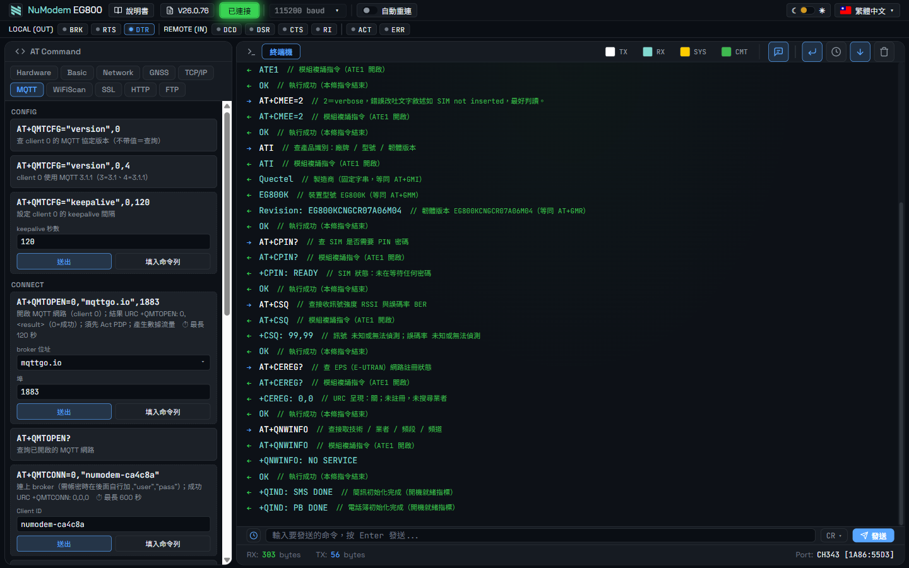
QMTPUBEX 兩段式：數滿長度自動送，不用 Ctrl+Z
AT+QMTPUBEX 的末參數是長度（位元組數），不是訊息內容
（MQTT 應用筆記 §3.3.8 結案 —— 塞訊息的單行送法必定回 ERROR）。
正確流程是兩段式：送指令 → 模組回提示符 > → 送出剛好 N 位元組，
模組數滿長度就自動送出，不需要 Ctrl+Z
（與 TCP 頁 AT+QISEND 的資料模式不同）。
按 Publish 全自動：只要在參數卡填訊息內容，
長度由 UTF-8 位元組數自動計算（中文一字 3 位元組，實測「測試」→ 6）。
- payload 型指令不提供「填入命令列」 —— 命令列送出一律加行尾， 那個 CR 會被算進長度而錯位，請用按鈕送。
- 韌體另有
AT+QMTPUB（資料模式變體，要 Ctrl+Z 收尾）—— 本工具一律改用QMTPUBEX，不必兩套都學。
判讀結果碼：每個指令的值域都不一樣
+QMTOPEN 的 3 是「PDP 啟用失敗」，
+QMTPUBEX 根本沒有 3 這個值。
最容易誤讀的是
+QMTCONN: 0,1 ——
它可能是查詢回應的「狀態 1＝初始化中」，也可能是寫入結果的「封包重傳中」。
單看一行分不出來，所以本工具把兩種讀法並陳，不硬猜。
你不必背表：從 +QMTOPEN 到 +QMTRECV／+QMTSTAT
的全部結果 URC，終端區都會依 MQTT 應用筆記 v1.5 的七張對照表逐欄加上白話註解。
離線與收尾
- 只想停止收訊、連線留著：按 Unsub
（
AT+QMTUNS=0,2,"主題"，msgid 固定 2）。 - 正常離線：按 Disconnect（
AT+QMTDISC=0， 送 MQTT DISCONNECT），回+QMTDISC: 0,0。 之後不必再按 Close Net ——AT+QMTCLOSE=0是給「QMTDISC 失敗、網路層卡住」時強制關閉用的。
不是你按的斷線（被踢、keepalive 逾時、斷網）會以 +QMTSTAT
異常斷線 URC 回報（例：+QMTSTAT: 0,5，終端區會註解原因），
此時要從 AT+QMTOPEN 重來。
疑難排解
| 症狀 | 原因與解法 |
|---|---|
| 每個指令都回 OK，然後就沒下文 | URC 被送去 USB 埠 —— urcport 出廠是 usbat，
切成 uart1（見前提 1） |
+QMTOPEN: 0,3 |
PDP 啟用失敗 —— 先 AT+QIACT=1（TCP/IP 頁）再重來 |
| 訂閱了卻收不到自己發的訊息 | 中途重新整理過頁面 —— 尾碼換組、模組也斷電重開。 同一次頁面生命週期內重跑一輪動線 |
| 收到不是自己發的訊息 | 公開 broker 主題污染（mosquitto 最嚴重）。預設主題已帶隨機尾碼； 自訂主題取獨特名字 |
| 大量發布時訊息掉了一部分 | emqx 有發布速率限制（實測爆量 100 只到 40）—— 換 mqttgo.io 或 hivemq（100/100 無限流） |
| 等很久都沒有結果 URC | 這家族本來就慢：QMTOPEN 最長 120 秒、
QMTCONN／QMTSUB／QMTPUBEX 最長 600 秒
（PUBEX＝封包逾時 60 秒 × 重試 10），按鈕說明已標示，不是當掉 |
WiFiScan —— Wi-Fi 掃描與網路定位
工作原理：EG800K 是 LTE 模組，沒有 Wi-Fi 上網能力， 但內建一個「只掃不連」的 Wi-Fi 接收器：被動接收周邊 2.4GHz 熱點廣播的 beacon 訊框，回報每個熱點的 MAC 位址（BSSID）、RSSI（訊號強度）與頻道。 掃描是純 RF 接收，零數據流量；本身不會產生座標 —— 要把 MAC＋RSSI 清單送去雲端熱點位置資料庫查詢才換得出經緯度； 這就是室內也能用、不靠衛星的網路定位。 本節所有數字與行為都是 2026 年 8 月對實體 EG800K 的實測值。
本頁的兩群按鈕
上半 Wi-Fi Scan 四顆（純掃描），下半 QuecLocator (QLBS) 十三顆（先讀後面的真相段落再按）：
| 按鈕 | 指令 | 作用與實測重點 |
|---|---|---|
| Support? | AT+QWIFISCAN=? |
查參數範圍。本機實回
(4000-255000),(1-3),(4-10),(0-255),(0-1) |
| Read Cfg | AT+QWIFISCAN? |
讀目前參數。本機出廠 12000,1,5,5,0＝
時限 12 秒、1 輪、熱點上限 5、RRC 逾時 5 秒、優先權 0 |
| Scan | AT+QWIFISCAN |
用目前參數掃一次。結果在 OK 之後非同步回報，
最長等 13 秒 |
| Scan (custom) | 參數卡 | 自訂時限（毫秒）／輪數／熱點上限／RRC 逾時／優先權後掃描 |
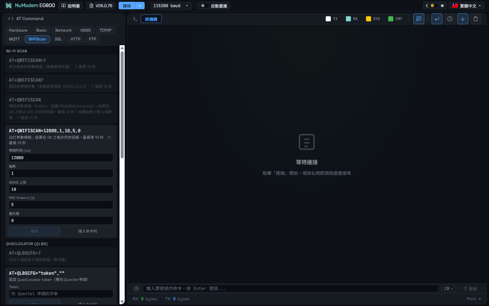
第一次掃描：怎麼按、會看到什麼
- 跑開機儀式（見〈開機儀式〉一節）。
- 確認 URC 走 UART：
AT+QURCCFG="urcport"要回"uart1"。出廠值是"usbat"—— 掃描結果全部被送去 USB 埠，這裡只看得到OK、 連 TIMEOUT 都等不到（設定寫 NVRAM，改一次就好）。 - 按
Scan：模組先回OK， 這代表「掃描開始」，不是結果。幾秒內（最長到掃描時限） 結果一條一條回報，每行附自動註解（MAC／RSSI／頻道）。
判讀掃描結果
實測回報長這樣（2026-08-29，掃到 7 個熱點，RSSI -37 ~ -89 dBm）：
+QWIFISCAN: (-,-,-37,"C2:28:35:00:00:01",1) +QWIFISCAN: (-,-,-46,"10:71:B3:00:00:02",4) +QWIFISCAN: (-,-,-88,"A8:A2:37:00:00:03",6)
欄位順序是 (ecn, ssid, rssi, mac, channel)。
本機韌體的 ecn 與 ssid 固定回 -（2026-08-02 實測），
清單看不到「這是誰家的 Wi-Fi」——
對定位剛好夠用，資料庫吃的本來就是 MAC＋RSSI。
RSSI 直覺：-30 ~ -50 很近、-60 ~ -75 一般、-80 以下很弱。
時限內一個熱點都沒掃到時回 +QWIFISCAN:TIMEOUT ——
正常結束，不是錯誤（冒號後沒空白，本工具解析已處理）。
想多掃幾顆：用參數卡把熱點上限從出廠的 5 調高（本機極限 10）、
輪數調到 2-3（實測跨輪結果會去重）。
C2:／62:／9E:
開頭，第一位元組的 0x02 位元為 1 —— 多 SSID 分身的虛擬 BSSID），
定位資料庫通常直接忽略這種位址，實際可用素材只剩 3 顆全域位址。
Support? 實回為準，別照抄文件數字。
QuecLocator（QLBS）按鈕群：按之前先看真相
QuecLocator 是 Quectel 的雲端定位服務：AT+QLBS（Locate
按鈕）一條指令，韌體自己蒐集素材、送去伺服器查庫、回傳座標。三個現實：
- 要 token，而且是收費服務。官方文件明寫須聯絡 Quectel 技術支援申請（無自助註冊）。本機 token 出廠為空。
- 16 份 EG800K 官方文件沒有一份提到 QuecLocator。 手上的應用文件是 EC200U／EG915U 用的（語法與錯誤碼實測相符）， 不是本機的官方文件。
- 本專案已裁定不採用（2026-08-29）：定位邏輯鎖在韌體裡， 服務一旦收攤，整條 AT 指令直接失效、供應商無法抽換 （Quectel 論壇已證實 BG95 系列停止支援）。 按鈕保留，只為「若拿得到免費 token 順手驗證」。
+QLBS: 702 是「伺服器逾時」，不是 token 問題。
本專案曾把 702 誤判成「沒 token」整整三週 —— 真相是當時忘了先啟用
PDP，模組根本連不上伺服器，等滿逾時（出廠 60 秒）就回 702。
2026-08-29 對照實驗（token 全程為空）：
PDP 未啟用回 702；啟用後回 10002（token 不存在）——
伺服器從臺灣是連得通的，缺的只有 token。
下 AT+QLBS 前一定要先 AT+QIACT=1（會產生流量）。
七個設定子項的查／設都有按鈕，Cfg?（AT+QLBSCFG=?）
一鍵列出全部範圍（零流量）。本機出廠值與實測重點：
| 子項（按鈕） | 出廠值 | 實測重點 |
|---|---|---|
token（Set Token／Token?） | 空 | 讀回一律被遮成 *；設定路徑實測是通的 |
server（Server?／Set Server） |
www.queclocator.com:80 | 定位伺服器位址 |
timeout（Timeout?／Set Timeout） | 60 秒 | 就是 702 等的那個逾時，範圍 10-120 |
asynch（Async?／Set Async） | 0 | 同步／非同步切換 |
latorder（LatOrder?） | 0 | 緯經度輸出順序。⚠ 設定用小寫鍵，讀回卻是駝峰 latOrder |
withtime（WithTime?） | 0 | 回應是否附時間；讀回鍵名 withTime |
timeupdate（TimeUpd?） | 0 | 是否用定位結果校正模組時鐘；讀回鍵名 timeUpdate |
真的拿到 token：Set Token 填入 → Token?
確認（顯示 *）→ TCP/IP 頁啟用 PDP → Locate。
替代路線：免 token 的網路定位（實測 71 公尺）
網路定位不必靠 QuecLocator。替代路線 2026-08-29 已端到端打通：
模組只出素材（本頁掃熱點、AT+QENG="servingcell" 讀基地台），
終端機輸出存檔後交給 tools/wifi_geolocate.py 在 PC 端查公開資料庫 ——
模組零流量、免 Quectel 服務。
實測（與同日 GNSS 真值比對）：基地台查表用 Unwired Labs（免費註冊）誤差
71 公尺（定位這條線的收尾結論）、用 beaconDB（免金鑰）632 公尺；
Wi-Fi 查表則卡在供應商 —— 免費生態已崩（beaconDB 本區無涵蓋、
Unwired Labs 免費方案不含 Wi-Fi、Google／HERE 要綁卡），擱置。
疑難排解
| 症狀 | 原因與解法 |
|---|---|
按 Scan 只回 OK，結果永遠不出現 |
URC 被送去 USB 埠 —— AT+QURCCFG="urcport" 查，
不是 "uart1" 就改（寫 NVRAM） |
+QWIFISCAN:TIMEOUT |
時限內沒掃到熱點，正常結束不是錯誤。換位置或調長時限 |
+QLBS: 702 |
伺服器逾時 —— 幾乎都是忘了 AT+QIACT=1，不是 token 問題 |
+QLBS: 10002 |
token 不存在 —— 要向 Quectel 付費申請；本專案已裁定不採用， 改走上面的替代路線 |
想用 AT+QCELLLOC |
本機不支援（回 ERROR）—— 那是 EC2x 系列的指令 |
SSL —— TLS 通道
工作原理：SSL 頁是加密連線的共用底層 —— 這裡設好的 SSL context 與上傳的憑證，同時供 SSL raw socket、MQTT over SSL 與 HTTPS 使用。本節的秒數與行為都是 2026 年 8 月對實體 EG800K 的實測值。
第一次 TLS 連線：五個步驟
- 跑開機儀式（見〈開機儀式〉一節），再按
AT+QIACT?確認資料通道 —— 要回得出+QIACT: 1,1,…,"IP"，沒有就先AT+QIACT=1。 - 設 context：
sslversion填 4（全部版本， 相容性最好）、ciphersuite填 0XFFFF（全部套件）、seclevel先填 0 —— 先確認通道會通，驗證留到後面。 - 開連線：按
AT+QSSLOPEN（末碼 0），參數卡填 主機與埠。⚠OK只代表「指令收下」，成敗要等 URC：+QSSLOPEN: 4,0才是成功（實測交握 2.0 秒）。 - 送資料：按
AT+QSSLSEND（兩段式）—— 出現>後送本文，數滿宣告長度自動送出， 免 Ctrl+Z（單包上限 1460 bytes）。對方回話會出+QSSLURC: "recv",4。 - 讀回與關閉：
AT+QSSLRECV（單次上限 1500） 讀到+QSSLRECV: 0代表收乾淨了，不是錯誤。AT+QSSLCLOSE=4關閉（預設最長等 10 秒； 另一顆可指定秒數，0＝立即）。
AT+QSSLOPEN=1,1,4,"tcpbin.com",4243,0 OK +QSSLOPEN: 4,0 ← 2.0 秒，0＝成功 AT+QSSLSEND=4,15 > NuModem-P5-SSL ← 數滿 15 bytes 自動送出 SEND OK +QSSLURC: "recv",4 ← 0.4 秒 AT+QSSLRECV=4,1500 +QSSLRECV: 15 NuModem-P5-SSL AT+QSSLCLOSE=4
連線期間可按 AT+QSSLSTATE 看所有連線（=4
查單一 clientID，狀態 2＝已連線）。注意本地埠永遠回 0 ——
模組行為，不是錯誤。
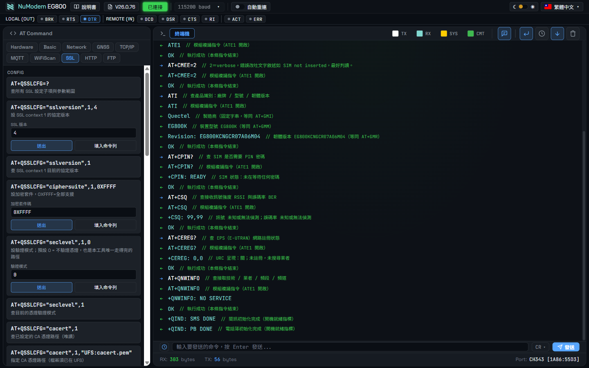
三種存取模式（AT+QSSLOPEN 末碼）
| 末碼 | 行為 |
|---|---|
| 0 緩衝 | 收到資料只發 +QSSLURC: "recv",<id>，
自己下 AT+QSSLRECV 讀 |
| 1 直推 | URC 多帶長度、資料直接吐在下一行；
⚠ 此模式下 AT+QSSLRECV 回 ERROR 是正常的 |
| 2 透傳 | AT 口整個變成資料通道（本頁按鈕只備 0 與 1） |
context 設定逐項
不確定韌體支援哪些子項就先按 AT+QSSLCFG=? ——
實測回 17 個子項，比應用手冊列的多。常用子項都有設定與查詢兩顆按鈕，
實測寫入後讀回完全一致。
| 子項 | 出廠 | 作用與實測要點 |
|---|---|---|
sslversion | — | 協定版本；4＝全部支援 |
ciphersuite | — | 加密套件；0XFFFF＝全部支援 |
seclevel | 0 | 0＝不驗證、1＝驗證伺服器 （要先上傳 CA 憑證）、2＝雙向認證（還要用戶端憑證＋私鑰） |
cacert | — | CA 憑證路徑，格式
"UFS:檔名"，檔案須已在 UFS（見下節） |
sni | 🔴 0 | 連虛擬主機／CDN 必開 —— 同一 IP 掛多網域時不送 SNI 就拿到不匹配的憑證，驗證必敗 566 |
ignorelocaltime | 🔴 1 | 出廠即使開了 seclevel 1 也不檢查憑證有效期。 要檢查就設 0，且模組時鐘要對 |
negotiatetime | 300 | TLS 交握最長等待秒數（10–300） |
cacert 不跨重開機保存
（實測確認），每次開機都回出廠值；UFS 裡的憑證檔則斷電不丟。
UFS 檔案群：憑證怎麼進模組
UFS 是模組內建快閃儲存，實測總容量 280 KB、每檔佔一個
4 KB 區塊。憑證要先上傳到這裡，cacert 才有檔案可指。
上傳走 UART、零數據流量，二進位檔也送得進去。
Upload 卡：選檔後檔名與大小自動填入，送出後工具等模組回
CONNECT 才送原始位元組（等不到就不送）。完成時
註解引擎自動比對模組回報的大小與 checksum：
✅＝完整無誤、❌＝傳壞了，先刪再重傳。
AT+QFUPL="badssl-root.pem",1939,10 CONNECT ← 接著送出 1939 bytes +QFUPL: 1939,4f64 ← 實收大小,checksum，註解自動比對 ✅
| 按鈕 | 用途 |
|---|---|
AT+QFLST | 列出 UFS 全部檔案與大小 —— 上傳後用它驗證（零流量） |
AT+QFLDS="UFS" | 查剩餘／總空間 bytes（零流量） |
AT+QFDEL | 刪除指定檔（*＝全部）；
同名檔不先刪、重傳會被擋 |
file already exist、逾時回數字 421，
本工具兩種都能解讀；（2）大小欄填得比實際大，模組逾時後
照樣把實收內容存檔 —— checksum 比對會抓出來。
憑證驗證實戰：成對測試法
流程：上傳根憑證 → cacert 指到它 → seclevel 1 →
sni 1 → 連目標的 443。要上傳的是憑證鏈最上層的根憑證
（badssl.com 的鏈有四層，上傳最頂端的 ISRG Root X1）。
只測「壞憑證連不上」不夠 —— 「全部連不上」也會通過。
要成對測試：好憑證連得上、壞憑證連不上，
兩個方向都成立才算數。實測 2×5 對照：
| 主機 | seclevel 0 | seclevel 1 |
|---|---|---|
| badssl.com（正對照） | 連得上 | 連得上 4,0 |
| expired（過期） | 連得上 | 拒絕 566 |
| self-signed（自簽） | 連得上 | 拒絕 566 |
| wrong.host（主機名不符） | 連得上 | 拒絕 566 |
| untrusted-root（根不受信） | 連得上 | 拒絕 566 |
限制：四種憑證錯誤全回 566，模組不區分是哪一種。
AT+QIGETERROR 也幫不上忙 —— 它管 TCP/IP 層，
這時只回 0,operate successfully。
ignorelocaltime 是 1，過期本身
不會被擋（上表它被擋是因為同時不在上傳的根之下），單測就用 wrong.host。
另外留意流量：每次交握都下載完整憑證鏈、失敗照付，
實測 30 次交握約 150–200 KB。
🔴 陷阱：連續開關約 20 次後，資料堆疊整個退化
AT+QSSLOPEN 一律回 552，連 seclevel 0
都連不上，而每項自我檢查都說沒事。30 秒鑑別：用純 TCP 的
AT+QIOPEN 打同一目標 —— 也失敗就是資料堆疊壞了，別再查
SSL 設定。PDP 重啟救不回來，只有完整開機儀式能復原。
退化會污染測試資料、易誤判成「被憑證驗證擋掉」——
做成對測試前先重開機清乾淨。
疑難排解
| 症狀 | 原因與解法 |
|---|---|
+QSSLOPEN: 4,566 |
憑證驗證失敗。依序查：sni 開了沒（最常見）、
cacert 的根對不對、憑證本身壞；
三個設定重開機就歸零 |
OK 之後沒下文 |
OK 只代表收下，結果走 URC，最久等到
150 秒＋negotiatetime |
| AT 口卡住不理任何指令 | AT+QSSLSEND 長度算錯、卡在資料模式吞指令 ——
用 Hardware 頁的原始位元組按鈕送 ESC（0x1B）脫身 |
HTTP —— 網頁請求
工作原理：模組的 HTTP 是三段式的：
先設 URL（這一步本身又是兩段式）、再發請求（GET／POST）、最後把回應讀回來。
每一段的結果都不在 OK 裡，而是之後才到的 URC ——
所以 AT+QURCCFG="urcport" 必須是 "uart1"（Hardware 頁可改），
否則結果一個都看不到。數據皆為 2026-08 實機實測。
開始之前：先有資料通道
前提是 PDP 已啟用並拿到 IP（TCP/IP 頁的 AT+QIACT=1）。
本頁 Connect 群組只放唯讀檢查：
AT+CPIN?／AT+CGATT?／AT+CGREG?／
AT+QIACT?、AT+QIDNSCFG=1（DNS 0.0.0.0＝沒配到）、
AT+QIGETERROR（⚠ 只對最後一條 TCP/IP 指令有效，
失敗後要立刻按）。
AT+QIACT? 會騙人。實測遇過 PDP 中途漂移：
所有請求全部失敗、固定 30 秒逾時回錯誤 716，
AT+QIACT? 卻照樣回 IP。用 AT+CGACT? 交叉比對，
不一致就是漂移了。修法：AT+QIDEACT=1 →
AT+CGACT=0,<漂移的 cid> → AT+QIACT=1，
ping 過再繼續。
第一次 GET：四個步驟
- 前置設定（Config 群組，零流量）：
contextid參數卡設 1（綁定要走的 PDP context）；rspout/auto、requestheader、responseheader三個開關保持 0 （理由見後）；AT+QHTTPCFG?一次讀回全部設定核對、AT+QHTTPCFG=?列出可設定項。 - 設 URL（兩段式）：
AT+QHTTPURL卡片只有一顆 「送出（兩段式）」鈕 —— 你填 URL，長度由程式自動算。流程：先送AT+QHTTPURL=<長度>,80，等CONNECT進入資料模式，再把 URL 位元組原樣送出、不加任何行尾 （CR/LF 會被算進長度）。http://www.example.com/長度恰是 23。送完按AT+QHTTPURL?讀回，逐字相同＝行尾沒混進去。 - 發請求：
AT+QHTTPGET=80（等回應秒數）。OK只代表「收下指令」，真正結果是稍後的 URC+QHTTPGET: 0,200，判讀見下段。 - 讀回應：
AT+QHTTPREAD=80。CONNECT之後全是原始位元組（實測 example.com 為 559 bytes），接著OK—— 但最後獨立一行的+QHTTPREAD: 0才是結束標記。
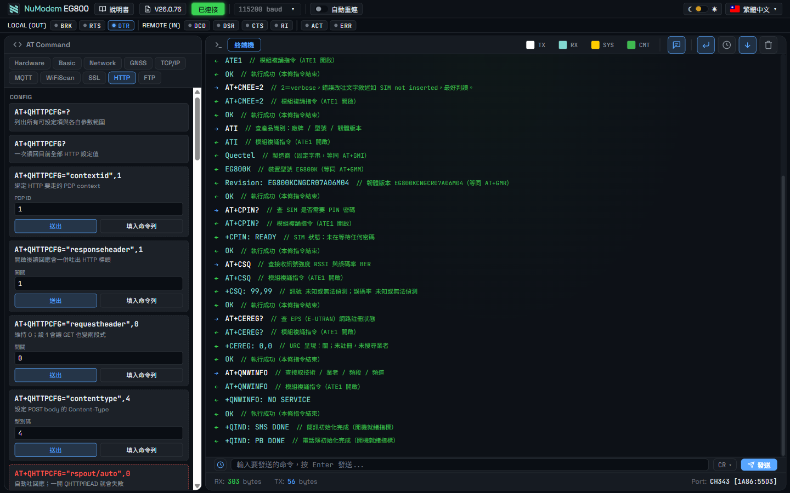
判讀 +QHTTPGET：第一欄不是 HTTP 狀態碼
GET／POST／POSTFILE 的結果 URC 都是
<err>,<httprspcode>,<content_length> 三欄：
err 0 ＝ 指令執行成功、非 0 是模組層錯誤（716、711…）；
httprspcode 是 HTTP 狀態碼，只在 err=0 時才回報
（手冊明載；工具內建 200／403／404／409／411／500 對照註解）；
content_length 選填 —— 伺服器回應標頭有 CONTENT-LENGTH 才有，
一般 GET 常常只有兩欄。所以實測的 +QHTTPGET: 0,404,0
不是失敗：指令成功了，是伺服器說找不到。
讀回應：AT+QHTTPREAD 的陷阱
參數是「兩包資料間的最大間隔秒數」，不是總時長。
本機韌體只吃一個參數：應用文件的
=<wait>,<read_len> 分段讀法實測回裸
ERROR（=? 探測證實），按鈕已移除 ——
分段取回改用 GETEX。
rspout/auto 一設 1，READ 類一律失敗
（手冊明載）。它讓模組自動吐回應，代價是 READ 類全滅，
所以這顆按鈕有確認對話框。READ 突然全掛，先查 AT+QHTTPCFG?。
分段取回：AT+QHTTPGETEX 逐 byte 讀
AT+QHTTPGETEX=<秒>,<起始位移>,<長度>
走 HTTP Range 只抓指定片段、省流量。實測（端點內容固定為
abcdefghijklmnop）：位移 0 取 8 回 +QHTTPGET: 0,206,8、
讀出 abcdefgh；位移 8 再取 8 讀出 ijklmnop。
判讀：狀態碼必須是 206；回 200 且每次內容一樣
＝伺服器不支援 Range，不是模組壞掉。
⚠ 只在 requestheader=0 時可執行。
POST：兩段式與 Content-Type
AT+QHTTPPOST 卡片也是兩段式：你填 body、長度自動算，先送
AT+QHTTPPOST=<長度>,<輸入秒>,<回應秒>，
等 CONNECT 再送 body。三件事：
CONNECT最長要等 125 秒（手冊明載）—— 等提示符的逾時要設足 125 秒，別沿用 MQTT 的 5 秒。- body 上限 1 MB（
=?實測範圍 1–1024000）。 - Content-Type 先用
contenttype參數卡設好 （型別碼 0 ＝ form-urlencoded）。
實測：POST Message=HelloQuectel（20 bytes）回
+QHTTPPOST: 0,200,440；READ 回的 JSON 可驗證鍵值送達、
長度算對、Content-Type 生效，User-Agent 是模組自報的
QUECTEL_MODULE。
自訂標頭與回應標頭
reqheader/add：加單條自訂請求標頭（手冊未附實例）； 查詢鈕可查目前加了幾條；reqheader/remove移除。requestheader設 1 ＝ 整份請求標頭自己組，連 GET 都變兩段式， 且GETEX不能用。平常維持 0。responseheader設 1 後 READ 連 HTTP 回應標頭一併吐出 （實測連自訂的 X-Test 都帶得回來）。測完改回 0。closed/ind：開啟「session 被關閉」的 URC 回報。
檔案版：POSTFILE 與 READFILE（UFS）
AT+QHTTPPOSTFILE="檔名",<秒> 以模組檔案系統（UFS）的檔案
當 body 送 POST；AT+QHTTPREADFILE="檔名",<秒> 把回應存成
UFS 檔。⚠ 本工具目前無法先上傳檔案到 UFS、也讀不回 UFS
檔內容，這兩條供搭配韌體端流程使用。
HTTPS：免驗證路徑
HTTPS ＝ HTTP ＋ SSL context。Connect 群組備好最短路徑，五顆照序按：
AT+QHTTPCFG="sslctxid",1 ← HTTP 指定用 SSL context 1 AT+QSSLCFG="sslversion",1,4 ← TLS 版本交給伺服器協商 AT+QSSLCFG="ciphersuite",1,0XFFFF ← 加密套件全開 AT+QSSLCFG="seclevel",1,0 ← 不驗憑證（見下） AT+QSSLCFG="sni",1,1 ← 開 SNI（出廠是 0！）
之後 URL 換 https:// 開頭照常 GET／READ ——
實測讀回 HTML 與明文版逐字相同。
seclevel=0（不驗憑證）是本工具唯一走得完的路徑
—— 要驗憑證得先把 CA 憑證寫進 UFS；SSL 細節（AT+QSSLCFG=?
列全部子項、negotiatetime 調握手等待秒數）見〈SSL —— TLS 通道〉一節。
SNI 出廠是 0：不開，共用 IP 的 HTTPS 站拿到不匹配的憑證、
一驗就敗。憑證鏈是流量大頭：一輪 HTTPS GET 約 8–15 KB，
明文才約 1 KB。
轉址與收尾
轉址（手冊沒寫，實測釐清）：模組會自動跟隨 302，但
只吃絕對路徑的 Location —— 相對路徑直接回錯誤 711、
1 毫秒立即失敗。收尾：
AT+QHTTPSTOP（Close 群組）取消進行中的請求並斷開 session；
狀態怪怪的、或出現錯誤 704（資料模式被佔）時先按這顆收乾淨。
疑難排解
| 症狀 | 原因與解法 |
|---|---|
| 看不到任何結果 URC | urcport 不是 uart1，
去 Hardware 頁改 |
| 所有 URL 都 716、固定 30 秒逾時 | PDP 漂移，見上方警告 |
| 單一 URL 回 716 | 實測 DNS 失敗也是 716（不是舊文件猜的 714）；接著 READ 回 705 是正常連鎖 |
READ／GETEX 突然失敗 |
rspout/auto 與 requestheader
都要是 0（見上文） |
AT 都沒回應 |
模組掛住（實測遇過，手冊沒描述）—— 重跑開機儀式 |
FTP —— 檔案傳輸
工作原理：FTP 有兩條通道：控制通道走命令、
資料通道走檔案內容。登入、改名、刪除、查大小只走控制通道；
LIST、上傳、下載要另開一條資料連線 ——
本節大半的怪現象（615、603 連發）都由此而來。
貫穿全節的 Quectel 通則：OK 只代表「指令收下」，
真正結果之後才以 URC 送達。本節回應與數字全是 2026 年 8 月對實體 EG800K 的實測值。
開始之前：兩個前提
- PDP 要先啟用：本頁第一顆
AT+QIACT?就是做這個檢查 —— 回得出+QIACT: 1,1,…,"IP"才能繼續，只回 OK 就先到 TCP/IP 頁按 Act PDP（PDP 未啟用時 QFTPOPEN 必失敗）。 - URC 要走 UART：FTP 指令幾乎全是「先 OK、結果再以 URC 送達」，
AT+QURCCFG="urcport"不是"uart1"的話， 這裡只看得到一堆 OK（設定見 Hardware 頁）。
登入動線：設定 → 開啟 → 等 URC
- 綁 PDP context：
AT+QFTPCFG="contextid",1（出廠即為 1，查詢鈕可讀回確認）。 - 設帳密：
AT+QFTPCFG="account","帳號","密碼"， 必須在 QFTPOPEN 之前設好。 - 模式與型態：
transmode設 1 （被動；NAT 後方一律用它，FTPS 必須）；filetype純文字檔用 1、其餘用 0。 - 登入：
AT+QFTPOPEN="主機",21立即回 OK（只是收下）， 等+QFTPOPEN: 0,0才是登入成功（最長 125 秒）。 再按AT+QFTPSTAT應回 1（閒置；2＝傳輸中、3＝關閉中）。
AT+QFTPCFG="account","demo","password" AT+QFTPCFG="transmode",1 AT+QFTPOPEN="test.rebex.net",21 OK ← 只代表指令收下 +QFTPOPEN: 0,0 ← 這一行才是登入成功
其餘設定項：AT+QFTPCFG=? 一鍵列出全部 10 個可設定項與範圍（零流量）。
rsptimeout（20–180，預設 90 秒）是多數指令的最大回應時間、
也是資料模式中兩包資料的最大間隔；ssltype／sslctxid 是
FTPS 用（純 FTP 維持 0，SSL 參數在 SSL 頁設）；
data_address／cache／restenable
屬特殊環境微調，用途見各鈕說明與手冊。
AT+QFTPCFG="account"
讀回時密碼被遮成 *（手冊說原樣印出）。但帳號仍是明文，
設定那一行的密碼也是明碼，截圖錄影要留意的是設定行。
AT+QFTPCLOSE 是非同步的 —— OK 不代表關好了。
要等 +QFTPCLOSE: 0,0 才算登出完成；期間 AT+QFTPSTAT
回 3（關閉中），下任何 FTP 指令一律回 +CME ERROR: 603（伺服器忙碌）。
症狀極具誤導性：一連串 603 看起來像模組壞了或被伺服器封鎖， 其實只是還沒關完（實測當天就因此繞了一大圈）。等待上限＝rsptimeout。 另外它只登出 FTP；要徹底重置網路，到 TCP/IP 頁按 Deact PDP。
目錄與檔案管理：把伺服器當檔案總管用
全套伺服器端檔案操作（LIST／NLST／MLSD 要開資料連線，其餘只走控制通道）。
成功回應一律 +QFTPXXX: 0,… —— 第一個數字 0 就是成功：
| 指令 | 做什麼 | 成功回應（實測） |
|---|---|---|
AT+QFTPPWD | 查目前工作目錄 | +QFTPPWD: 0,"/" |
AT+QFTPCWD | 切換工作目錄，之後的操作以此為基準 | +QFTPCWD: 0,0 |
AT+QFTPLIST | 完整清單直接吐在終端機（兩顆鈕：目前目錄／指定目錄） | 內容後 +QFTPLIST: 0,1175（尾數＝位元組數） |
AT+QFTPNLST／AT+QFTPMLSD | 只列檔名（省流量）／MLSD 標準格式（好解析） | 同 LIST |
AT+QFTPSIZE | 查檔案大小，不下載內容 | +QFTPSIZE: 0,20 |
AT+QFTPMDTM | 查檔案修改時間，不下載內容 | +QFTPMDTM: 0,"20260807141117" |
AT+QFTPMKDIR／AT+QFTPRMDIR | 建立／刪除資料夾 | …: 0,0 |
AT+QFTPRENAME | 檔案或資料夾改名 | +QFTPRENAME: 0,0 |
AT+QFTPDEL | 刪除檔案 | +QFTPDEL: 0,0 |
招式（實測整串通過）：拿 SIZE 當存在性檢查 ——
改名後查舊名回 +QFTPSIZE: 627,550、新名回 0,20；
刪除後再查又是 627,550，不下載半個 byte 就驗證了每一步。
627,550 是兩層錯誤碼：627＝模組層「FTP 未執行所請求的動作」、
550＝FTP 協定層伺服器回覆「檔案或目錄不存在」，本工具的註解會分層翻譯。
下載：內容直接印在終端機（COM:）
AT+QFTPGET="檔名","COM:" —— CONNECT 後檔案內容直接吐在終端機，
結尾 +QFTPGET: 0,<位元組數>（實測 readme.txt 回 0,379）。
另一顆分塊下載鈕多帶起點與長度參數，是最推薦的下載方式：
先用 SIZE 查大小、再分塊拿，避免整檔爆流量。
AT+QFTPLEN 查上一次 PUT／GET／LIST／NLST 實際傳了多少 byte。
上傳：兩段式，送滿宣告長度自動結束
AT+QFTPPUT="檔名","COM:",0,<長度>,1 是兩段式指令：
等 CONNECT（進入資料模式）後送出剛好宣告長度的位元組數，
模組數滿自動退出資料模式，不必送 Ctrl+Z。本工具長度自動計算，參數卡貼上內容即可。
AT+QFTPPUT="numodem-test.txt","COM:",0,20,1 CONNECT ← 進入資料模式 NuModem-P6-FTP-test\n ← 送出剛好 20 bytes OK +QFTPPUT: 0,20 ← 伺服器收到 20 bytes
這 20 bytes 實測時特地從主機端用 Python ftplib 抓回逐位元組比對 —— 完全相符。
UFS 中轉形式：手冊另支援檔名寫成 "UFS:xxx"、
以模組內建儲存區中轉，細節見 FTPS 應用筆記；要先把電腦檔案放進 UFS，
用 SSL 頁「UFS 檔案」羣的 Upload 鈕（AT+QFUPL，走 UART 零流量、
自動比對 checksum）。
+++ 對 FTP 是「中止」不是「暫停」。
手冊（FTPS AN v1.5 p13）寫逃逸後可用 ATO 重回資料模式續傳，
實測不成立（測兩次結果一致）：逃逸後 AT+QFTPSTAT
回 1（閒置）而不是 2（傳輸中），ATO 回 NO CARRIER ——
傳輸已被整個中止，沒有可回復的連線。所以 +++ 只能用來從失控的
資料模式脫身，不能拿來暫停大檔下載。
正確下法：前後各靜默 1 秒、以原始位元組送、不加 CR（加了不生效）—— 本頁的
+++ 鈕已照此規矩送；ATO 鈕依手冊語意保留。
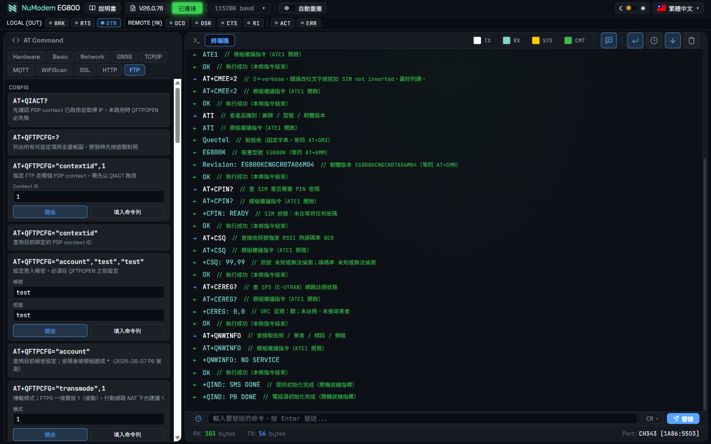
疑難排解
| 症狀 | 原因與解法 |
|---|---|
+CME ERROR: 603 連發 |
① QFTPCLOSE 後還在關閉中（QFTPSTAT 回 3）—— 等 +QFTPCLOSE: 0,0；
② 先前發生過 615 —— 615 之後所有 FTP 指令一律 603，直到正確關閉為止 |
+CME ERROR: 615 |
開資料連線失敗：控制通道正常、資料通道全滅 （SIZE 有回應，PUT／GET／LIST 全倒）。多半是伺服器端問題 —— dlptest 從兩條不同網路路徑測都失敗、rebex 全程零失敗； 讀取用 rebex、寫入才用 dlptest 且一次做完 |
627,550 |
檔案或目錄不存在 —— 檔名或路徑打錯，先 QFTPPWD／QFTPLIST 確認自己在哪 |
| 重開機後第一個 PUT 就 615 | 資料堆疊退化：QFTPCLOSE 與 PDP 重啟都救不回，
只有完整開機儀式能復原。鑑別法：用 TCP/IP 頁
AT+QIOPEN 打同一目標 —— 也失敗＝整個堆疊壞了，別再查 FTP 設定 |
| 指令回 OK 後什麼都沒發生 | 結果 URC 跑去 USB 埠了 —— 查 AT+QURCCFG="urcport"
是不是 uart1 |
AT+QFTPOPEN 直接失敗 |
PDP 沒啟用 —— 先按本頁 AT+QIACT?，沒有 IP 就到 TCP/IP 頁 Act PDP |
🧪 測試方法
這一節寫的是「怎麼測才不會得到假結論」。都是實際踩過才學到的。
OK 幾乎都不代表完成
Quectel 這類模組有一個共通模式：先回 OK 表示指令收下，
真正的結果走 URC。屬於這類的有
QIOPEN、QSSLOPEN、QMTOPEN、
QFTPOPEN、以及最容易被忽略的 QFTPCLOSE。
把 OK 當成完成然後馬上下一個動作，是本專案繞最多冤枉路的原因。
沒有對照組就不要下結論
兩個實例：
- 憑證驗證：只測「壞憑證連不上」時，「全部都連不上」也會通過。 要同時證明好憑證連得上。
- AGNSS 加速：7-2「冷啟動 TTFF」本來就是 7-4 的對照組。 室內沒有衛星訊號時兩邊都定不出來，測了只會得到「兩邊都失敗」。
每輪測試尾端跑一次健康檢查
模組會退化。連續開關連線約 20 次之後，
會進入一種「控制通道還活著、資料通道全滅」的狀態 ——
而且 QSSLSTATE 是空的、QIACT? 有 IP、
QIGETERROR 回 0，看起來完全正常。
這個狀態會污染測試資料。實測中就發生過：退化期間某些主機在「關閉驗證」時也連不上， 差點被判定成憑證驗證的結果。每輪結束前用一個已知可連的目標驗一次， 資料才可信。
AT+QIOPEN 打同一個目標。
如果它也失敗，那就不是 SSL / FTP 層的問題，是整個資料堆疊壞了。
復原方式：只有完整開機儀式有效。
QIDEACT + QIACT 救不回來。
零流量探測：AT+Q...=?
測試形式（=?）不觸網、不花錢，
而且回的是這顆韌體真正支援的參數範圍 ——
比應用文件可信，因為文件是一整個系列共用的。
本專案就是靠這招抓到 Wi-Fi 掃描的參數範圍與手冊不符。
驗「真的傳對了」要從第三方讀回來
+QFTPPUT: 0,20 只是模組自報它送了 20 bytes。
實測是從電腦端用另一個 FTP 客戶端把檔案抓回來逐 byte 比對 ——
這樣才同時排除了「模組算錯」與「伺服器存壞」兩種可能。
流量
AT+QGDCNT? 回「送出,接收」兩個位元組數。
⚠ 這個計數器不存 NV，模組每次重開機就歸零；
AT+QAUGDCNT 不是累計計數器，是「自動存檔間隔」的設定（0 ＝ 停用）。
要跨階段累計必須每段當場記，事後補不回來。
參考數字：TLS 交握比直覺貴很多， 每次交握都要下載完整憑證鏈，失敗的交握一樣付錢。 實測 11 次交握就用掉 TX 15.3 KB / RX 59.6 KB。
❓ 常見問題
Q：按了連線，但清單裡沒有任何接埠
檢查三件事：（1）是不是用 file:// 開的 —— Web Serial 會被擋；
（2）USB-UART 的驅動程式裝了沒；（3）瀏覽器是不是 Chrome / Edge / Opera。
Q：指令送得出去，但模組完全沒有回應
九成是沒跑開機儀式。連上序列埠的瞬間 RTS 會被重新拉高，
而 RTS 在這塊板子上是負邏輯的電源開關 —— 等於連線就斷電。
切到 Hardware 頁跑一次 Power / Reset，等 RDY。
其次是行尾設成了 LF。EG800K 只吃 CR。
Q：指令都回 OK，但完全收不到 URC
下 AT+QURCCFG="urcport"。出廠值是 usbat，
URC 全被送到 USB 埠去了。改成 uart1，這條寫 NVRAM 只要設一次。
Q：終端機卡住了，打什麼都沒反應
你多半在資料模式裡 —— 某個兩段式指令的長度算錯，
模組還在等你把位元組數補滿。
用 Hardware 頁的原始位元組按鈕送 ESC（0x1B）脫身。
FTP 的資料模式則要送 +++（前後靜默 1 秒、不加 CR）。
Q：一直回 +CME ERROR: 603
如果剛下過 AT+QFTPCLOSE，那是關閉還沒完成。
等 +QFTPCLOSE: 0,0 出現再繼續。
Q：連線全部失敗，但 AT+QIACT? 顯示還有 IP
模組的資料堆疊退化了。用純 TCP 的 AT+QIOPEN 打一個已知可連的目標確認 ——
如果它也失敗，重跑完整開機儀式。
QIDEACT + QIACT 救不回來。
Q：送了資料給 echo 伺服器卻收不到回聲
檢查 payload 結尾有沒有 \n。很多 echo 服務是逐行的，
沒有換行就不會回送。欄位裡直接打 \n 兩個字元即可，
工具會在送出前解碼成真正的換行，長度也會跟著算對。
Q：GNSS 一直定不出位置
先用 AT+QGPSGNMEA="GSV" 看有沒有衛星。
室內通常一顆都收不到，那就不是設定問題，是沒有天空視野。
Q：怎麼換語言或主題？
右上角。語言 18 種、主題深淺兩套，選擇都會記住。 AT 指令的說明與註解也會跟著翻譯，不只是介面。
Q：這個工具會不會偷偷用到我的流量？
不會。它是純前端的單一 HTML 檔，沒有後端。
會產生行動流量的只有你自己按下去的那些資料類指令，
那些按鈕的說明裡都寫清楚了。查詢類與 =? 測試類指令完全不觸網。